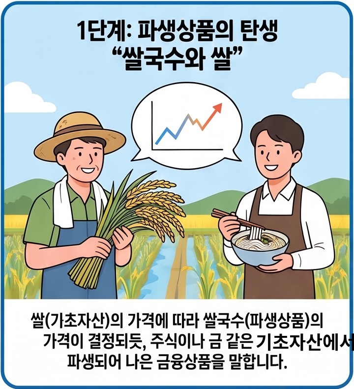
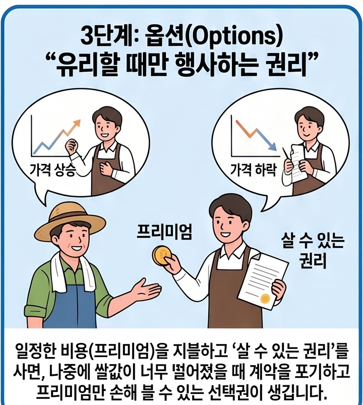
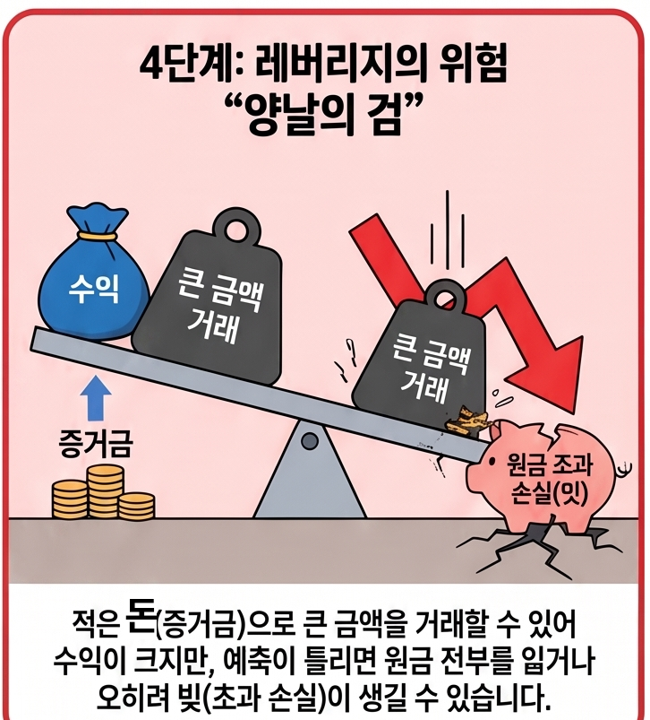
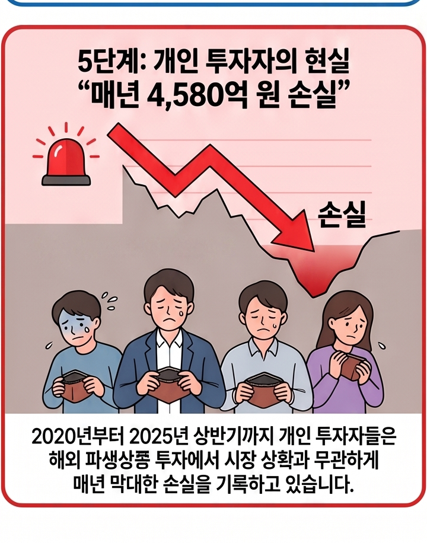
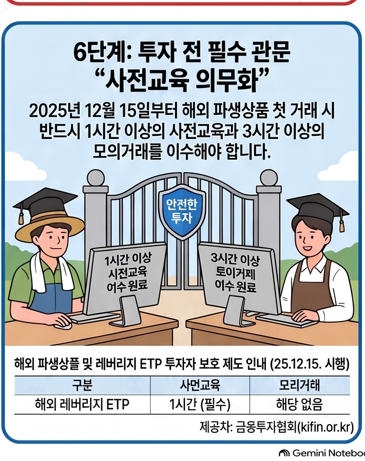
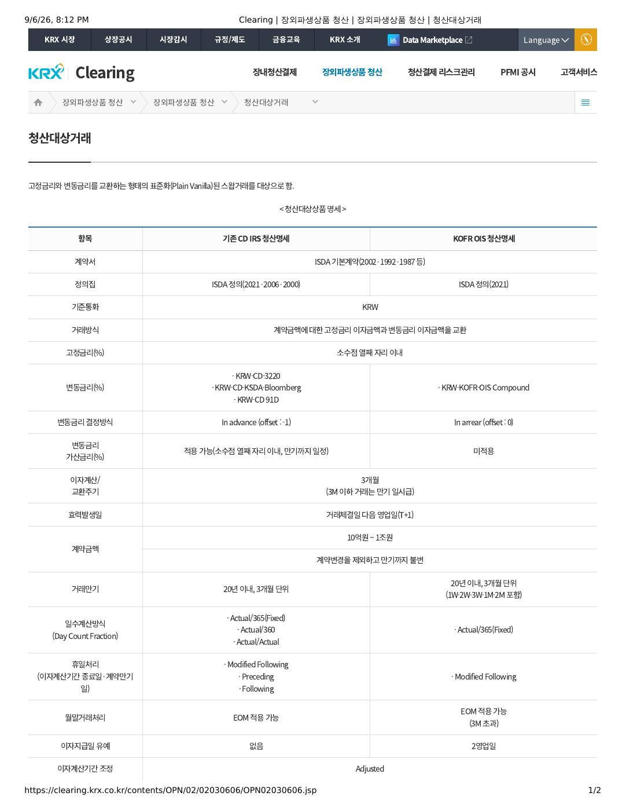

선물과 옵션
안전자산과 위험자산의 핵심 구분 기준
금융에서 특정 자산을 '안전자산'으로 분류할 때 가장 중요하게 보는 것은 "경제 위기나 시장 변동성이 극심할 때 내 가치가 유지되거나 오히려 오르는가?"입니다.
- 원금 보전 가능성 (원금 손실 리스크)
- 안전자산: 발행 주체(국가, 은행 등)가 부도나지 않는 한 원금이 보장되거나 손실 가능성이 극히 낮습니다.
- 위험자산: 시장 상황, 기업 실적 등에 따라 원금 손실(발행사 부도, 가격 폭락 등) 가능성이 존재합니다.
- 가격 변동성 (Volatility, 볼래틸러티)
- 안전자산: 가격 오르내림의 폭이 작고 예측 가능성이 높습니다.
- 위험자산: 경기 상황이나 뉴스에 따라 가격 폭등·폭락이 빈번하게 발생합니다.
- 환금성 및 유동성 (Liquidity, 리퀴디티)
- 안전자산: 위기 상황에서도 언제든지 현금으로 교환하기 쉽고 거래 상대방을 찾기 용이합니다.
- 위험자산: 시장이 급락할 때 거래가 끊기거나(매수자가 사라짐) 큰 손실을 보고 팔아야 할 수 있습니다.
- 발행 주체의 신용도 (Credit Rating)
- 안전자산: 최고 수준의 신용도를 가진 국가(예: 미국 등 주요 선진국)나 제1금융권 은행이 보증합니다.
- 위험자산: 기업, 신흥국 등 상대적으로 신용도가 낮거나 보증 주체가 없는 경우가 많습니다.
| 구분 | 주요 자산 | 특징 및 분류 이유 |
|---|---|---|
| 대표 안전자산 | 미국 국채 | 세계 최고 신용도인 미국 정부가 지급을 보증함 |
| 금 (Gold) | 실물 가치가 존재하며, 인플레이션이나 전쟁 등 위기 시 가치가 오르는 경향 | |
| 주요 선진국 통화 (USD, CHF 등) | 위기 발생 시 전 세계 자금이 몰리는 기저 통화(달러, 스위스 프랑 등) | |
| 예금 / 적금 | 원금 보장 기능 및 예금자 보호 제도가 적용됨 | |
| 대표 위험자산 | 주식 (Stocks) | 기업 성장 시 높은 수익을 주지만, 부도나 실적 악화 시 원금 손실 |
| 원자재 (원유, 원자재 등) | 경기 변동 및 공급망 상황에 따라 가격 변동성이 매우 큼 | |
| 가상자산 (비트코인 등) | 내재 가치 논란 및 제도적 보증 주체가 없어 변동성이 극도로 높음 | |
| 회사채 및 신흥국 채권 | 발행 기업이나 국가의 부도 위험(신용 위험)이 존재함 |
참고사항: 상대성과 환경적 변화
안전자산이라도 '절대적인 안전'을 의미하지는 않습니다.
- 예컨대 미국 국채도 금리가 급격히 오르면 평가 손실이 발생할 수 있습니다.
- 달러 역시 한국 투자자 입장에서는 환율 변동에 따른 리스크가 수반됩니다.
- 비트코인 같은 자산은 시장에서 대체로 위험자산(성장주와 유사한 궤적)으로 분류되지만, 일부 투자자들에게는 '디지털 금'이라는 안전자산적 성격으로 논의되기도 합니다.
계약과 만기, 먼저 이해하기
계약은 두 사람이 “무엇을, 언제, 얼마에 어떻게 하자”라고 약속을 정리한 것입니다. 예를 들어 농부와 식당 주인이 “가을에 배추 1,000포기를 포기당 3,000원에 사고팔자”고 합의하면, 거래 대상·가격·날짜가 들어간 계약이 됩니다.
일반 거래에서 자주 쓰는 용역과 납기
용역은 물건 자체를 넘기는 거래와 달리, 사람이나 회사가 업무·기술·노무를 제공하는 것을 말합니다. 예를 들어 소프트웨어 개발, 시스템 유지보수, 설계·컨설팅, 운송·청소가 용역 계약의 대상이 될 수 있습니다. 계약서에는 업무 범위, 결과물, 대가, 검수 기준과 책임을 정합니다.
납기는 물건·결과물·용역을 계약 조건에 맞게 납품하거나 완료해야 하는 약정 시점입니다. ‘납기일’에는 완성품을 인도하는 날뿐 아니라 용역의 완료·검수 제출 기한이 포함될 수 있습니다. 납기가 늦어졌을 때의 지연배상, 계약 해제, 대금 지급 조건은 계약서와 거래 규정에 따라 달라집니다.
| 구분 | 일반 물품·용역 계약 | 선물·옵션 계약 |
|---|---|---|
| 대상 | 물건의 납품 또는 서비스·결과물의 완료 | 거래소가 정한 기초자산 또는 가격 변동에 연결된 표준 계약 |
| 기준 시점 | 납기: 납품·완료·검수 등을 약정한 시점 | 만기: 남아 있는 계약을 인도 또는 현금정산으로 끝내는 시점 |
| 주의할 점 | 업무 범위·검수·지연 책임·대금 조건을 확인합니다. | 결제 방식·최종거래일·거래승수·증거금과 손익 위험을 확인합니다. |
만기는 그 약속을 끝내고 정산하는 마지막 날입니다. 약속한 날이 오면 실제 물건을 주고받거나, 계약에서 정한 방식대로 가격 차이를 계산해 돈으로 정산합니다. 선물·옵션에서는 이 마지막 날과 정산 방식이 상품마다 미리 정해져 있습니다.
청산: 계약을 마무리하고 남은 금액을 계산하는 일
청산은 계약에서 남아 있는 권리와 의무를 확인하고, 주고받을 돈이나 자산을 계산해 거래 관계를 끝내는 과정입니다. 선물·옵션은 만기 때 인도 또는 현금결제로 청산할 수 있고, 만기 전에는 반대매매로 기존 포지션을 정리할 수도 있습니다. 거래소 거래에서는 청산기관이 거래 당사자 사이의 결제와 위험 관리를 맡습니다.
일상적인 금융생활에서도 비슷한 모습을 볼 수 있습니다. 예를 들어 적금을 해약하면 은행은 기존 적금 약정을 끝내고, 지금까지 넣은 원금과 적용 이자를 계산해 지급합니다. 이렇게 계약을 끝내며 금액을 정리한다는 넓은 뜻에서는 청산의 예로 이해할 수 있습니다. 다만 은행에서 쓰는 정확한 업무 명칭은 보통 ‘적금 해지·해약’이고, 선물·옵션 거래소의 청산과는 절차와 제도가 다릅니다.
따라서 선물을 볼 때는 “오를까 내릴까”보다 먼저 무슨 계약인지, 만기가 언제인지, 실물인도인지 현금결제인지를 확인하는 것이 중요합니다. 수익률은 그다음에 보는 결과입니다.
국가의 재정과 위험으로 보는 파생상품의 발달
파생상품의 역사는 단순히 금융기법이 복잡해진 과정만은 아닙니다. 수확·무역·전쟁·환율·금리처럼 국가와 민간이 통제하기 어려운 위험을 어떻게 나누고 재정을 안정시킬지 고민하는 과정과도 연결됩니다. 다만 파생상품이 오직 국가 존립을 위해 발전했다기보다, 국가 재정, 상업 확대, 민간의 위험관리와 거래소 경쟁이 함께 작용했다고 보는 것이 정확합니다.
| 시대·환경 | 재정·경제적 과제 | 위험관리와 계약의 변화 |
|---|---|---|
| 봉건제·농업 중심 경제 | 세금과 주요 자산이 곡물에 의존해 기후·수확량·가격 변동이 영지 재정과 생계에 큰 영향을 주었습니다. | 상인과 생산자는 곡물 등을 미래에 정한 가격으로 인도하기로 약속하는 선도 형태의 거래를 활용했습니다. |
| 근세 상업·전쟁 재정 | 해상무역의 운송 위험과 전쟁 비용, 국채·회사채무의 관리가 중요해졌습니다. | 보험, 주식·옵션 거래, 채무의 전환과 유통이 발전했습니다. 이들은 모두 파생상품은 아니지만 위험을 나누고 자금을 조달하는 금융시장의 기반을 넓혔습니다. |
| 현대 글로벌 경제 | 변동환율·금리·원자재 가격의 변화가 기업과 금융기관, 나아가 국가경제에 큰 영향을 미치게 됐습니다. | 통화·금리·주가지수 선물과 스왑이 표준화·확대되며 환율, 금리, 시장가격 위험을 관리하는 수단이 됐습니다. |
농업 경제: 수확과 세입의 불확실성
농업 중심 사회에서 곡물은 식량인 동시에 세금·재산·교환수단이었습니다. 흉작과 풍작은 가격과 세입을 크게 흔들었고, 생산자·상인·영주는 미래 인도와 가격을 미리 약정해 불확실성을 줄이려 했습니다. 에도 시대에는 각 번이 세금으로 거둔 쌀을 오사카로 보내 쌀 증서로 거래했고, 도쿠가와 막부는 1730년 도지마의 현물·장부상 선물 거래를 공식 인가했습니다. 도지마 시장은 회원제와 청산 기능을 갖춘 조직적 선물거래소의 선구자로 평가됩니다.
상업과 국가부채: 위험의 이전과 자금 조달
16~18세기 해상무역은 침몰·해적·가격 변동 위험을 동반했고, 유럽 국가들은 전쟁과 식민지 경쟁에 필요한 자금을 국채와 특허회사를 통해 조달했습니다. 네덜란드·영국의 보험, 주식, 옵션 거래는 이러한 위험을 여러 투자자에게 나누는 방법을 넓혔습니다. 영국 남해회사는 정부채무를 회사 주식으로 전환하는 구조를 활용했지만, 이는 파생상품 자체라기보다 국가채무 관리와 주식시장 발전이 결합한 사례로 이해하는 편이 적절합니다.
변동환율 시대: 금융 파생상품의 확대
1970년대 브레튼우즈 체제가 무너지면서 고정환율의 틀이 약해지고 통화 가치의 변동성이 커졌습니다. CME는 1972년 주요 통화의 선물을 상장했고, 이후 금리·국채 선물과 주가지수선물이 발전했습니다. 오일 쇼크와 금리 변동도 기업과 금융기관에 큰 부담을 주면서, 현물 거래만으로는 관리하기 어려운 가격 위험을 선물·옵션·스왑으로 나누려는 수요가 커졌습니다.
핵심 흐름: 농업 경제의 수확 위험 → 상업·전쟁 경제의 무역 위험과 국가채무 → 글로벌 경제의 환율·금리·원자재 위험. 파생상품은 이 위험을 없애는 장치가 아니라, 계약 상대방과 시장 참여자 사이에 배분하고 가격을 미리 정하는 장치로 발전했습니다. 따라서 헤지는 위험을 줄일 수 있지만, 잘못된 규모·만기·상대방 선택은 새로운 손실과 신용위험을 만들 수 있습니다.

현물과 선물: 지금 거래와 미래 계약
현물(現物)은 주식·채권·금처럼 실제로 존재하는 자산을 지금 사고파는 거래입니다. 예를 들어 주식을 사면 결제 뒤 그 회사의 지분이 내 계좌에 들어오는데, 이것이 현물 거래입니다.
영어권 금융시장에서는 현물가격·현물시장을 보통 스팟 가격(spot price)·스팟 시장(spot market)이라고 부릅니다. 주식·채권처럼 파생상품이 아닌 자산을 선물과 대비할 때는 현금시장(cash market)이라는 표현도 씁니다. 그래서 주식 매수는 기업 지분 자체를 보유하는 현물 거래이고, 주식선물 매수는 그 주가 변화에 연결된 계약을 보유하는 파생상품 거래입니다.
다만 원유·금·곡물처럼 실제 물건의 인도까지 강조할 때는 실물자산(physical commodity·피지컬 커모디티) 또는 실물인도 (physical delivery·피지컬 딜리버리)라고 합니다. spot은 “지금 거래·결제하는 시장”이라는 뜻에 가깝고, physical은 “실물의 보관·운송·인도”를 강조하는 말이라는 차이가 있습니다.
선물은 미래 가격을 지금 약속하는 계약입니다. 실제 자산을 지금 받는 대신 가격 차이를 정산하는 구조가 많습니다. 현물은 보통 사려는 금액 전체가 필요하지만, 선물은 일부 증거금으로 거래하므로 적은 돈으로 큰 금액에 노출될 수 있고 손익도 빠르게 커질 수 있습니다.
선물·옵션은 언제, 왜 만들어졌을까요?
미래에 물건을 주고받기로 하는 약속(선도계약)은 오래전 상업에도 있었기 때문에 최초의 한 건을 단정하기 어렵습니다. 아래에서는 기록과 제도가 비교적 분명한 이정표를 구분합니다.
| 구분 | 시기·장소 | 무엇이 처음이었나 | 필요했던 이유 |
|---|---|---|---|
| 조직화된 선물시장 | 일본 오사카 도지마, 1730년 | 막부가 쌀 증서 현물시장과 장부상 쌀 선물시장을 공식 인가했습니다. 회원제와 청산 기능을 갖춘 세계 최초의 제도권 선물거래소로 널리 알려져 있습니다. | 쌀은 세금·주요 자산이었고, 수확·운송·보관 사이 가격이 크게 달라졌습니다. 생산자·번·상인이 미리 가격을 정하고 거래하기 위해서였습니다. |
| 독립형 옵션계약 | 벨기에 앤트워프 거래소, 16세기 | 연구 문헌은 이곳의 독립적으로 거래되는 옵션계약을 초기 사례로 봅니다. 다만 현존 기록이 제한적이어서 ‘한 날짜의 최초 옵션’으로 단정하지 않습니다. | 먼저 소액의 프리미엄을 내고, 이후 가격이 유리할 때만 거래할 수 있게 해 가격변동 위험을 제한하려는 목적이었습니다. |
| 금융옵션 시장의 정착 | 네덜란드 암스테르담, 17세기 | VOC 등 회사 주식에 대한 콜·풋과 정기 만기가 거래됐습니다. 17세기 초 주식시장 형성 뒤 옵션 거래가 나타났다는 도시 기록도 남아 있습니다. | 먼 항해·무역과 주식 가격의 불확실성을 관리하거나, 제한된 비용으로 가격 방향에 참여하려는 수요가 있었습니다. |
약속이 오늘의 거래 방식으로 바뀐 과정
1. 맞춤 선도계약 — 두 사람이 품질·수량·가격·인도일을 직접 정했습니다. 유연하지만 상대방이 약속을 지키지 못할 위험과, 계약을 다른 사람에게 넘기기 어려운 문제가 있었습니다.
2. 거래소 선물 — 도지마에서 발전한 장부 거래·회원·청산이라는 발상이 이후 시장의 토대가 됐습니다. 미국 CBOT는 1848년에 만들어져 초기 선도거래를 거친 뒤 1865년 곡물 표준 선물계약을 도입했습니다. 오늘날 선물은 거래소가 수량·만기·결제 규칙을 정하고, 증거금·일일정산·청산기관으로 이행 위험을 관리하며 반대매매로 포지션을 끝낼 수 있습니다.
3. 옵션 — 매수자는 프리미엄을 내고 정해진 가격(행사가)에 사고팔 권리를 얻지만, 행사할 의무는 없습니다. 반대로 매도자는 매수자가 행사하면 이행할 의무를 집니다. 1973년 4월 26일 CBOE가 표준화된 상장 주식옵션을 처음 거래시키면서, 표준 계약·청산·행사·배정 절차를 갖춘 현대 상장 옵션시장이 본격화됐습니다.
주가지수선물의 등장: 포트폴리오 전체를 헤지하다
세계 최초의 주가지수선물은 1982년 2월 24일 미국 가 상장한 밸류라인 종합지수(Value Line Composite Index) 선물로 알려져 있습니다. 개별 주식이 아니라 주식시장 전체의 움직임을 선물계약의 대상으로 삼은 첫 사례였습니다.
1970년대에는 경기·금리·환율의 불확실성이 커지면서 기관투자자와 자산운용사가 포트폴리오 전체의 하락 위험을 관리할 필요가 커졌습니다. 주식을 모두 팔지 않아도 주가지수선물을 매도하면 시장 전반이 하락할 때 현물 주식의 손실 일부를 선물 이익으로 상쇄하는 헤지가 가능해졌습니다.
당시 곡물 선물이 중심이던 KCBT에는 차별화된 금융상품이 필요했고, 이미 통화·금리 선물을 성공시킨 시카고 거래소들과의 경쟁도 신상품 개발을 뒷받침했습니다. 주가지수선물은 수십·수백 종목을 직접 사고파는 대신 하나의 계약으로 시장 전체에 노출되거나 포트폴리오 비중을 조정할 수 있어 거래비용과 시간을 줄이는 장점도 있었습니다.
KCBT의 시도 뒤 CME는 1982년 4월 21일 을 상장했습니다. 이후 주가지수선물은 대표적인 시장 위험 관리 수단이자, 적은 증거금으로 큰 시장 노출을 만들 수 있는 레버리지 상품으로 발전했습니다.
핵심은 처음부터 ‘수익을 크게 내는 상품’을 만들려던 것이 아니라 미래 가격과 공급의 불확실성을 미리 나누고 고정하려는 데 있었습니다. 표준화와 청산이 더해지면서 계약을 쉽게 사고팔 수 있게 됐고, 그만큼 투기와 레버리지 위험도 함께 커졌습니다.
수익률
수익률은 돈이 얼마나 늘어날 가능성이 있는지, 위험은 예상과 다르게 줄어들 수 있는 정도를 뜻합니다.
Return / Rate of Return은 수익률을 뜻하는 가장 흔한 표현입니다. 보통은 rate of return을 풀어 쓰거나 return이라고 합니다.
ROI (Return on Investment)는 더 자주 쓰이는 약어이지만, 원래 투자 비용 대비 순이익이라는 비교적 좁은 의미입니다. 따라서 모든 수익률을 ROI라고 부르는 것은 엄밀하지 않을 수 있습니다.
CAGR (Compound Annual Growth Rate)은 여러 기간에 걸친 연평균 수익률을 말합니다. Yield는 채권 이자나 배당처럼 정기적으로 발생하는 수익률을 가리킬 때 주로 씁니다.
Interest는 금리일까요, 이자일까요?
Interest는 금융 문맥에서 기본적으로 돈을 빌리거나 맡긴 대가인 이자를 뜻합니다. 비율을 말할 때는 Interest Rate, 즉 금리·이자율이라고 합니다. 예를 들어 연 3.5%는 Interest Rate이고, 그 비율을 적용해 실제로 지급하거나 받는 돈은 Interest입니다.
| 문맥 | 뜻 | 대표 표현 |
|---|---|---|
| 금융·경제 | 이자, 금리 또는 지분 | Interest Rate: 금리·이자율 Interest: 지급하거나 받는 이자 Controlling Interest: 지배지분 |
| 일상·심리 | 관심, 흥미 | Express Interest: 관심을 표명하다 |
| 법률·권리 | 이익, 권리, 이해관계 | Conflict of Interest: 이해충돌 |
선물가격과 Interest Rate의 연결
선물 이론가격에서 사용하는 금리(r)가 바로 Interest Rate입니다. 지금 현물을 사서 만기까지 보유하려면 자금이 묶입니다. 돈을 빌려 샀다면 이자를 내야 하고, 자기 돈으로 샀더라도 그 돈을 예금 등에 넣어 받을 수 있었던 이자를 포기합니다. 이런 자금조달비용 또는 기회비용이 선물의 적정 가격에 반영됩니다.
단순하게 보면 ‘선물 이론가격 ≈ 현물가격 + 만기까지의 자금조달비용 − 예상 배당’입니다. 금리가 높거나 만기까지 오래 남을수록 자금 비용이 커지는 방향으로, 예상 배당이 많을수록 현물 보유의 이점이 커져 선물가격을 낮추는 방향으로 작용합니다. 실제 계산은 상품의 결제 조건과 배당 시점 등에 따라 달라질 수 있습니다.
1억 원으로 보는 수익률 시뮬레이션
기업과 개인이 각각 투자할 수 있는 돈 1억 원을 가지고 있다고 가정해 보겠습니다. 같은 수익률이라도 돈을 써야 하는 목적이 다르면 감당할 수 있는 손실과 투자 판단도 달라집니다.
아래 시뮬레이터에서 기업 또는 개인을 선택하고 예상 수익률과 기간을 바꿔 보세요. 수익률 숫자만 비교하지 말고, 손실이 생겨도 기업 운영이나 개인의 생활 계획에 문제가 없는지 함께 확인하는 방식으로 활용하세요.
기업·개인별 투자 목적을 선택하고, 수익률과 기간에 따른 예상 금액을 계산합니다.
유동성은 필요할 때 현금으로 바꾸기 쉬운 정도입니다. 수익률이 높아 보여도 급하게 돈이 필요할 때 팔기 어렵다면 내 상황에는 맞지 않을 수 있습니다.
“높은 수익률, 낮은 위험, 높은 유동성”을 동시에 모두 얻기는 어렵다는 점을 기억하세요.
파생상품은 “가격에서 나온 계약”입니다
파생(派生)은 “어떤 것에서 갈라져 나와 생긴다”는 뜻입니다. 파생상품은 주식·주가지수·금리·환율·원자재처럼 기준이 되는 대상의 가격 변화에 따라 가치가 달라지는 계약입니다. 기준이 되는 대상을 기초자산이라고 합니다.






예를 들어 KOSPI 200 선물은 KOSPI 200 지수 자체를 사는 것이 아니라, 그 지수의 미래 가격 변화와 연결된 계약을 거래하는 것입니다. 옵션은 미래에 정한 가격으로 사고팔 수 있는 권리를 거래합니다.
주요 계약 유형과 거래 구조
기초자산(underlying asset)은 파생상품 계약의 기준이 되는 바탕 자산입니다. 주식·주가지수·국채와 금리·외환·암호화폐 같은 금융자산뿐 아니라 원유·천연가스·금·은·구리·옥수수·원두 같은 실물상품도 기초자산이 될 수 있습니다. 날씨, 신용위험(CDS), 부동산 지수처럼 특정 사건·지표를 기준으로 한 계약도 있습니다.
기초자산으로서의 금: 화폐·안전자산·기회비용
금(Gold)은 희소성, 내구성, 분할 가능성과 동질성 때문에 오랫동안 실물화폐로 쓰였습니다. 화폐는 일반적으로 교환의 매개, 가치의 척도, 가치저장의 기능을 하는데, 금은 역사적으로 이 세 기능과 연결돼 왔습니다. 금본위제와 브레튼우즈 체제에서는 금이 국제통화 질서의 기준 역할을 했지만, 1970년대 초 브레튼우즈 체제가 무너지면서 오늘날 대부분의 통화는 법정화폐 체제에서 운용됩니다.
현대의 금은 일상 결제 수단이라기보다 인플레이션, 통화가치 하락, 금융불안에 대비하는 실물자산으로 주목받습니다. 다만 금 가격도 금리·달러 가치·실물 수요·투자 수요·시장 심리에 따라 크게 오르내릴 수 있으므로, 어느 시기에도 구매력을 보장하거나 항상 다른 자산보다 안전하다는 뜻은 아닙니다.
실물 금은 기업·은행·정부가 발행한 채무가 아니므로, 보유 형태에 따라 발행기관의 신용에 직접 의존하지 않는다는 특징이 있습니다. 그러나 금 ETF, 금 계좌, 금 관련 파생상품은 운용사·보관기관·거래상대방·계약 구조의 위험을 별도로 가질 수 있고, 실물 금도 보관·도난·매매 스프레드와 가격 변동 위험에서 자유롭지 않습니다.
주요 중앙은행이 금을 외환보유액의 일부로 보유하는 이유도 준비자산을 다변화하고 위기 상황의 유동성·신뢰를 보완하기 위해서입니다. 금은 이자나 배당을 스스로 만들지 않으므로 실질금리가 오르면 이자수익 자산을 보유하지 않는 기회비용이 커질 수 있고, 실질금리가 낮거나 음수일 때는 그 기회비용이 줄어 금 수요에 영향을 줄 수 있습니다.
공식 보유량 기준의 교육용 비교입니다. 국가별 보고 시점이 다를 수 있습니다.
통화량과 가상화폐 시가총액을 구분해 보는 교육용 비교입니다.
| 구분 | 법정화폐 | 금 |
|---|---|---|
| 공급 | 중앙은행과 금융시스템의 제도 아래 통화량이 조절됩니다. | 채굴·재고·재활용에 영향을 받으며 단기에 공급을 크게 늘리기 어렵습니다. |
| 신용과 위험 | 국가 제도와 중앙은행에 대한 신뢰가 가치의 중요한 바탕입니다. | 실물 자체는 발행자의 채무가 아니지만, 가격·보관·상품구조의 위험은 남습니다. |
| 현금흐름 | 예금·채권 등 금융상품 형태에서는 이자수익이 생길 수 있습니다. | 실물 금 자체는 이자·배당을 만들지 않아 보관비용과 기회비용을 고려합니다. |
| 경제적 역할 | 일상 결제와 가격 표시의 기본 수단입니다. | 가치저장·분산·위기 대비 자산으로 활용될 수 있으나 수익과 안전을 보장하지는 않습니다. |
| 구분 | 장내 파생상품 | 장외(OTC) 파생상품 |
|---|---|---|
| 거래 방식 | · 등 거래소에서 거래합니다. | 금융회사끼리 또는 금융회사와 고객이 일대일로 계약합니다. |
| 계약 조건 | 거래 단위·만기·결제 방식이 표준화됩니다. | 당사자의 필요에 맞게 맞춤형으로 정합니다. |
| 신용위험 관리 | 청산소(CCP)가 거래의 중간에 서서 증거금·일일정산 등으로 이행위험을 관리합니다. | 상대방의 신용, 담보, 계약 조건을 당사자가 직접 관리해야 합니다. |
| 대표 계약 | 선물, 장내 옵션 | 선도, 스왑 |
선도(Forward)는 미래 특정 시점에 약정 가격으로 자산을 인수·도하기로 하는 장외 맞춤 계약입니다. 조건을 유연하게 정할 수 있지만, 중도에 계약을 넘기거나 끝내기 어렵고 상대방이 약속을 지키지 못할 위험이 있습니다. 수출기업의 선물환 계약이 대표적인 예입니다.
선물(Futures)은 거래소에서 표준화된 조건으로 거래하는 계약입니다. 증거금과 일일정산(mark-to-market), 청산 제도로 이행위험을 관리하며, 만기 전 반대매매로 포지션을 정리할 수 있습니다. KOSPI 200 선물과 원유 선물이 예입니다.
옵션(Option)의 매수자는 프리미엄을 내고 행사가격에 살 권리() 또는 팔 권리()를 얻습니다. 매수자는 권리를 포기할 수 있어 손실이 낸 프리미엄으로 제한되지만, 이익의 범위는 ·과 기초자산 가격에 따라 다릅니다. 매도자는 프리미엄을 받는 대신 행사에 응해야 하므로 큰 손실이 발생할 수 있습니다.
스왑(Swap)은 두 당사자가 일정 기간 서로 다른 현금흐름을 교환하는 장외계약입니다. 은 고정금리와 변동금리 현금흐름을 바꾸어 금리 변동 위험을 관리하고, 은 서로 다른 통화의 원금·이자 현금흐름을 교환해 환율과 금리 위험을 함께 관리합니다.
파생상품을 쓰는 세 가지 목적
헤지는 보유 자산의 가격 하락이나 환율·금리 변동 위험을 줄이려는 거래입니다. 투기는 증거금을 활용해 가격 방향을 예측하고 수익을 추구하는 거래이며, 레버리지 때문에 손실도 빠르게 커질 수 있습니다. 차익거래는 현물과 선물처럼 경제적으로 비슷한 대상 사이의 가격 차이를 이용해 위험을 낮춘 수익 기회를 찾는 거래입니다. 실제 거래에는 비용·세금·유동성·체결 위험이 있어 무위험 수익이 보장되지는 않습니다.
계약 단위·만기·증거금과 청산 방식에 따라 현물 주식보다 손익이 더 빠르게 커질 수 있습니다. 거래 전에는 어떤 기초자산의 어떤 위험을 다루는 계약인지, 최대 손실과 추가 증거금 가능성이 무엇인지 먼저 확인해야 합니다.
파생상품 개념 동영상으로 보기 NotebookLM으로 만든 요약 영상입니다 · 구글 계정 로그인이 필요할 수 있습니다.
배추 판매로 보는 선물 계약
배추 농부가 가을에 배추 1,000포기를 수확해 팔 예정인데, 가을 가격이 포기당 1,000원이 될지 6,000원이 될지 알 수 없다고 해 보세요. 농부와 김치공장이 지금 “가을에 포기당 3,000원으로 1,000포기를 사고팔자”고 약속할 수 있습니다.
배추 선물 계약, 그림으로 보기
여기서 실제 배추는 기초자산이고, 미래에 정한 가격으로 사고팔겠다는 약속은 배추 가격에서 파생된 계약입니다. 농부는 가격 폭락 위험을 줄이고, 김치공장은 가격 급등 위험을 줄일 수 있습니다.
가을 시장가격이 1,000원이면 농부에게, 6,000원이면 김치공장에게 이 약속이 유리합니다. 따라서 파생상품은 위험을 줄이는 데 쓸 수 있지만, 가격이 한쪽으로 크게 움직이면 상대방의 손실도 커질 수 있습니다.
TRADE VS FUTURES
가격과 수량을 바꿔 만기 청산 결과를 비교해 보세요.
밭떼기에서 장외 선도계약까지: 맞춤형 위험관리
배추 밭떼기처럼 미래의 수량·가격·인도 시점을 당사자가 직접 정하는 거래는 경제적으로 선도계약(Forward Contract)과 닮았습니다. 실제 산업 현장에서는 농산물뿐 아니라 환율, 원자재, 에너지, 금리의 변동 위험을 관리하기 위해 장외거래(OTC)를 활발히 활용합니다. 다만 모든 장기 공급계약이 금융 선도계약인 것은 아니며, 실물 구매·공급 계약에는 품질·운송·검수 조건이 함께 들어갑니다.
산업 현장의 장외계약 사례
| 상황 | 맞춤 계약의 예 | 관리하려는 위험 |
|---|---|---|
| 항공사와 연료 공급 | 필요 시점·수량·가격 기준을 정한 항공유 공급계약 또는 가격 헤지 계약 | 유가 상승에 따른 연료비 증가 |
| 수출기업과 은행 | 장래 받을 외화를 미리 정한 환율로 교환하는 선물환 계약 | 환율 하락에 따른 원화 환산 매출 감소 |
| 건설사와 자재 공급업체 | 공사 기간에 맞춘 철강·시멘트의 수량·품질·납기·가격 조건을 정한 장기 공급계약 | 원자재 가격·공급 일정 변동 |
예를 들어 수출기업은 은행과 2년 뒤 받을 달러를 원화로 바꿀 환율을 미리 정할 수 있습니다. 그러면 환율 변화가 원화 수입에 미치는 영향을 줄일 수 있지만, 실제 수금 시점·금액이 달라지거나 계약을 중도해지하면 별도의 비용과 위험이 생길 수 있습니다. 따라서 위험을 ‘완전히 제거’한다기보다 계약 조건에 맞는 범위에서 줄이는 수단으로 이해하는 편이 정확합니다.
장외 선도계약과 거래소 선물의 차이
| 구분 | 장외 선도계약(Forward) | 거래소 선물(Futures) |
|---|---|---|
| 계약 방식 | 두 당사자가 1:1로 조건을 협의합니다. | 거래소가 정한 표준 계약을 익명 주문으로 거래합니다. |
| 수량·만기 | 필요한 날짜·수량·가격 기준에 맞춰 설계할 수 있습니다. | 상장된 계약 단위와 결제월 가운데 선택합니다. |
| 위험 관리 | 상대방 신용, 담보, 중도해지 조건을 당사자가 관리합니다. | 청산기관이 증거금·일일정산으로 결제불이행 위험을 줄입니다. |
| 유의점 | 맞춤성이 높은 대신 계약을 넘기거나 정리하기 어려울 수 있습니다. | 유동성이 있을 수 있지만 원하는 조건과 정확히 일치하지 않을 수 있습니다. |
거래소 청산은 결제불이행 위험을 줄이는 장치이지 위험을 없애거나 투자 손실을 보장하는 장치는 아닙니다. 기업은 필요한 날짜와 물량에 맞추기 위해 장외계약을 사용하기도 하고, 유동성과 표준화된 청산을 위해 거래소 선물을 사용하기도 하며, 상황에 따라 둘을 함께 활용할 수 있습니다.
장외계약서에는 무엇을 정할까요?
실물 공급계약과 금융 장외계약에는 보통 거래 대상·품질 규격·수량·가격 또는 가격 산식·인도 시기와 장소·결제 통화와 방식·중도해지·분쟁 처리 조건을 적습니다. 금융기관 사이의 장외 파생거래에서는 국제스왑파생상품협회(ISDA)의 마스터계약과 신용보강 부속서(CSA) 같은 표준 문서를 바탕으로 개별 거래 조건을 정하기도 합니다.
| 문서 | 쉽게 말하면 | 담기는 내용의 예 |
|---|---|---|
| ISDA 마스터계약 | 거래 관계 전체에 공통으로 적용하는 기본 약속 | 채무불이행이 났을 때의 처리, 여러 거래의 상계, 조기종료와 분쟁 해결 방법 |
| 스케줄(Schedule) | 두 당사자가 기본 약속을 자신들의 거래에 맞게 조정하는 부속 문서 | 적용 법률, 통지 방법, 한도·면제 조건처럼 당사자별로 달라지는 내용 |
| CSA | 상대방 위험을 줄이기 위해 담보를 어떻게 주고받을지 정하는 약속 | 담보 종류, 최소 이전 금액, 담보 평가와 교환 주기 |
| 확인서(Confirmation) | 이번 한 건의 거래 조건을 적는 거래 명세서 | 거래 종류, 계약금액, 기준금리·환율, 만기일, 지급일과 계산 방식 |
위 표는 문서의 역할을 이해하기 위한 예시입니다. 실제 계약 문구와 적용 여부는 거래 구조·당사자·관할 법률에 따라 달라집니다.
상대방 신용위험을 줄이기 위해 담보를 주고받거나, 상계·조기종료·증거금 조건을 계약서에 둘 수 있습니다. 그러나 모든 실물 공급계약에 ISDA 문서나 신용장(L/C)이 붙는 것은 아니며, 보증·보험·담보 등 어떤 장치를 쓰는지는 거래 구조와 법률·계약 조건에 따라 다릅니다.

선물은 미래 거래를 미리 정하는 약속
선물은 미래의 특정 날짜에 어떤 물건이나 자산을 미리 정한 가격으로 사고팔기로 하는 계약입니다. 이름에 “선(先)”이 들어가는 이유는 미래의 거래 조건을 지금 먼저 정하기 때문입니다.
현물 주식처럼 기업 지분이라는 물건 자체를 사는 것이 아니라, 지수·원유·환율 같은 기준 대상의 가격 변화에 따른 손익을 주고받는 표준 계약을 거래합니다.
예를 들어 A가 KOSPI 200 선물 1계약을 매도하고 B가 같은 계약 1계약을 매수해 주문이 체결되면 선물 계약 1개가 생깁니다. A는 지수가 내리면, B는 지수가 오르면 유리합니다. 거래소·청산기관이 양쪽 증거금을 관리하고 매일 손익을 정산합니다.
배추 농부와 김치공장이 “가을에 배추 1,000포기를 포기당 3,000원에 사고팔자”고 약속하는 모습을 생각해 보세요. 나중의 시장가격이 달라져도, 약속한 가격을 기준으로 거래하거나 차이를 정산합니다.
선물은 가격 변동 위험을 줄이는 헤지에 쓸 수 있지만, 가격 방향만 보고 거래하면 손실이 빠르게 커질 수 있습니다. 거래 단위·만기·증거금과 최악의 손실을 먼저 확인해야 합니다.
선물의 일일정산: 만기까지 손익을 미루지 않습니다
선물은 보통 만기일에만 손익을 계산하는 것이 아니라, 매 거래일 장이 끝난 뒤 그날의 정산가격을 기준으로 손익을 계좌에 반영합니다. 이를 일일정산 (일일 시가평가)이라고 합니다. 다음 날의 손익은 최초 진입가격이 아니라 전날 정산가격과 오늘 정산가격의 차이로 다시 계산합니다.
예를 들어 코스피200 선물 1계약을 보유한 상태에서 전날 정산가격이 340포인트, 오늘 정산가격이 342포인트이고 거래승수가 25만 원/포인트라면, 매수자는 2포인트 × 25만 원 = 50만 원을 받고 매도자는 같은 금액을 냅니다. 손실이 쌓여 계좌가 유지증거금 기준 아래로 내려가면 추가 증거금 납부를 요구받을 수 있으며, 채우지 못하면 포지션이 청산될 수 있습니다.
개인은 보통 증권사의 선물·옵션 거래계좌 예수금에서 정산 손익이 반영되고, 부족한 돈은 본인 명의의 연결 은행계좌에서 이체합니다. 기업은 임직원 개인 통장이 아니라 증권사에 개설한 법인 파생상품 거래계좌를 사용하며, 자금부서가 회사의 법인 운영·자금관리 계좌에서 필요한 증거금을 이체해 관리합니다. 정산 계산은 장 마감 뒤 이뤄지며 실제 반영·이체 가능 시각과 부족금 납부 마감은 증권사별 안내를 확인해야 합니다.
선물 거래의 일일정산(Mark-to-Market)은 매 영업일 거래가 마감된 직후 '일일 장 종료 시점'에 진행됩니다.
시장이 열려 있는 동안에는 가격이 계속 변하므로 평가 손익만 바뀌다가, 장이 닫히면 거래소가 당일 정산가격(Settlement Price)을 확정짓고 그날의 최종 손익을 계좌에 반영합니다.
시장별 일일정산 시점
| 시장 구분 | 대상 상품 | 일일정산 수행 시점 |
|---|---|---|
| 국내 파생상품 시장 (KRX) | 코스피200 선물, 국채선물 등 | 매 영업일 장 마감 직후 (오후 3:45 이후 정산) |
| 해외 파생상품 시장 (CME 등) | 나스닥/S&P500 선물, 원유, 금 등 | 각 해외 거래소의 본장 마감 시점 (한국시간 기준 주로 새벽~아침) |
일일정산이 이뤄지는 핵심 과정
- 당일 정산가격 확정: 장이 마감되면 거래소가 당일 마감 가격 등을 기준으로 정산가격을 산출합니다.
- 손익 정산 및 현금 이동:
- 이익 발생: 이익금만큼 증거금(계좌 잔고)에 바로 현금으로 입금됩니다.
- 손실 발생: 손실금만큼 증거금에서 바로 차감됩니다.
- 증거금 평가: 정산 후 남은 잔고가 유지증거금(Maintenance Margin) 미만으로 떨어졌는지 확인합니다.
- 마진콜(Margin Call) 발생: 유지증거금 밑으로 떨어지면 거래소/증권사가 다음 날 지정된 시간까지 증거금을 추가로 넣으라고 통보하며, 미입금 시 강제 청산(반대매매)됩니다.
요약
일일정산은 매일 장이 끝난 직후에 이루어집니다. 따라서 선물 포지션을 밤새 들고 넘어가는(오버나잇) 투자자는 매일 장 마감 후 자신의 계좌 잔고가 유지증거금 이상으로 유지되고 있는지 확인해야 합니다.
증거금은 계약금·중도금·잔금과 무엇이 다를까요?
건설·부동산·주문제작 거래의 계약금·중도금·잔금과 선물의 증거금·마진콜은 모두 계약 이행을 뒷받침한다는 점에서 비교할 수 있습니다. 그러나 일대일로 대응하지는 않습니다. 일반 거래 대금은 물건·서비스의 대가를 단계별로 지급하는 구조인 반면, 선물 증거금은 가격 변동에 따른 결제불이행 위험을 관리하기 위한 담보이며 일일정산에 따라 계속 변합니다.
| 상황 | 일반 거래 | 선물·옵션 거래 |
|---|---|---|
| 계약을 시작할 때 | 계약금·착수금은 계약 체결과 이행 의사를 표시하고, 계약 조건에 따라 해제·손해배상의 기준이 되기도 합니다. | 위탁증거금 또는 개시증거금은 포지션을 열기 위해 계좌에 예치·확보해야 하는 담보입니다. 기본예탁금과는 다른 개념입니다. |
| 계약을 유지할 때 | 중도금은 공정·인도 등 정한 단계에 따라 지급하는 거래대금입니다. | 유지증거금은 포지션을 계속 보유하기 위해 계좌에 남아 있어야 하는 최소 잔액 기준입니다. 상품·시장에 따라 수준이 달라집니다. |
| 부족하거나 이행하지 못할 때 | 계약금 몰수, 해제, 손해배상 등 계약과 법률관계에 따른 처리가 문제됩니다. | 잔액이 유지증거금 아래로 내려가면 추가증거금 납부를 요구받을 수 있고, 기한 내 충족하지 못하면 반대매매로 강제청산될 수 있습니다. |
| 계약을 끝낼 때 | 잔금을 지급하고 물건·서비스를 인도받습니다. | 반대매매, 실물인도 또는 현금결제로 손익과 의무를 확정합니다. |
즉 유지증거금은 ‘중도금을 더 내는 시점’이라기보다 계좌 안전 잔액의 기준선입니다. 일일정산 손실로 이 기준 아래로 내려가면 증권사가 정한 기한과 방식에 따라 추가 자금을 채워야 하며, 이를 흔히 마진콜이라고 부릅니다. 추가 납부액과 강제청산 기준은 거래소·상품·증권사별로 다를 수 있습니다.
전일·오늘 정산가격과 계약 수를 바꿔 당일 손익을 확인해 보세요.
주문이 만나야 선물·옵션 계약이 생깁니다
선물이나 옵션은 한쪽의 주문만으로는 생기지 않습니다. 같은 계약을 사려는 주문과 팔려는 주문이 가격·수량 조건에서 만나야 체결됩니다. 예를 들어 어떤 사람은 지수가 오를 것이라 보고 선물 매수 주문을, 다른 사람은 내릴 것이라 보고 같은 선물 매도 주문을 낼 수 있습니다. 두 주문의 가격이 맞으면 계약이 하나 생기고, 오르면 매수 쪽이, 내리면 매도 쪽이 유리해집니다.
주문에서 계약이 생기기까지
계약 성립 4단계
풋옵션 매수로 보면
“풋옵션을 산다”는 말은 거래가 체결된 뒤 매수자 입장에서 설명한 표현입니다. 실제로는 기초자산, 옵션 종류(풋), 행사가격과 만기가 모두 같은 계약의 매도 주문이 있어야 합니다. 이때 필요한 상대는 콜옵션 매도자가 아니라 같은 풋옵션의 매도자입니다.
예를 들어 A가 어떤 풋옵션을 200원에 사겠다고 주문했지만 팔려는 사람이 없다면, A의 주문만 주문장에 남고 계약은 아직 없습니다. 이후 B가 같은 풋옵션을 200원에 팔겠다고 주문하면 두 주문이 체결되고 계약 1개가 생깁니다. 반대로 B의 매도 주문이 먼저 들어와 A의 매수 주문을 기다릴 수도 있습니다.
다만 항상 “한 사람은 상승, 다른 사람은 하락”이라고만 생각하면 좁습니다. 주식 보유자는 하락 위험을 줄이려고 선물을 매도할 수 있고, 기업은 원재료 가격 상승을 걱정해 선물을 매수할 수 있습니다. 즉 반대 주문은 서로 다른 전망 때문에 나오기도 하고, 이미 가진 위험을 줄이려는 헤지나 가격 차이를 이용하려는 거래 때문에 나오기도 합니다.
거래소에서는 서로의 이름을 보고 1:1로 상대를 골라 계약하지 않습니다. 투자자가 증권사 앱에 계약 종류·만기·가격·수량을 넣어 주문하면, 거래소의 주문장에 익명으로 쌓입니다. 시스템은 살 가격이 팔 가격과 만나는지 확인해 자동으로 체결합니다. 보통 더 높은 매수호가와 더 낮은 매도호가가 먼저, 같은 가격이면 먼저 들어온 주문이 먼저 처리됩니다.
예를 들어 ‘340.00에 1계약 매수’와 ‘340.00에 1계약 매도’가 주문장에 있으면 시스템이 이를 연결합니다. 매수 주문이 3계약이고 반대 주문이 여러 개라면 여러 주문과 나누어 체결될 수도 있습니다. 반대로 매수 339.95와 매도 340.00처럼 가격이 만나지 않으면 주문장에 남아 기다립니다. 체결 뒤에는 거래소·청산기관이 정해진 방식으로 결제와 증거금 관리를 맡으므로, 개인이 특정 반대편의 신원을 알아야 거래할 수 있는 구조가 아닙니다.
내가 낸 주문이 호가창에서 어떻게 체결·대기되는지 직접 확인하세요.
헤지는 큰 손실을 줄이는 안전장치
헤지(hedging)는 예상과 다르게 가격이 움직여 생길 손실을 줄이기 위한 위험관리 방법입니다. 위험을 완전히 없애거나 무조건 돈을 버는 방법이 아니라, 손익이 한쪽으로 너무 크게 흔들리지 않게 완충하는 데 목적이 있습니다.
예를 들어 배추 농부가 가을 배추값 하락이 걱정돼 미리 일정 가격에 팔기로 선물계약을 맺는다면 헤지입니다. 시장가격이 떨어져도 수입 감소 위험을 줄일 수 있지만, 배추값이 크게 올랐을 때 얻을 수 있는 이익 일부도 포기할 수 있습니다.
왜 선물 헤지를 그대로 ‘보험’이라고 부르지 않을까요?
선물·선도 헤지와 보험형 보호는 위험을 줄인다는 목적은 같지만, 손익을 바꾸는 방식이 다릅니다. 선물 헤지는 불리한 가격뿐 아니라 유리한 가격의 효과도 함께 줄여 거래가격을 고정하는 ‘양방향 고정장치’에 가깝습니다. 반면 풋옵션 매수는 프리미엄을 내고 하락 손실을 제한하면서 상승 가능성은 남겨 두는 ‘안전망’에 가깝습니다.
| 구분 | 선물·선도 헤지 | 풋옵션을 이용한 보험형 보호 |
|---|---|---|
| 작동 원리 | 가격을 정해 손실과 추가 이익을 함께 제한합니다. | 최저가격을 방어하면서 상승 이익은 열어 둡니다. |
| 처음 필요한 금액 | 선도는 별도 선급비용이 없을 수 있고, 선물은 증거금을 맡깁니다. 수수료와 일일정산 부담은 생길 수 있습니다. | 권리를 사는 대가로 프리미엄을 지급합니다. |
| 가격 상승 시 | 현물의 추가 이익이 선물·선도의 반대 손익으로 줄어들 수 있습니다. | 옵션을 행사하지 않고 현물의 상승 이익을 누릴 수 있습니다. |
| 가격 하락 시 | 현물 손실을 선물·선도 이익으로 상쇄해 약정가격에 가까운 결과를 만듭니다. | 풋옵션을 행사하거나 팔아 하락 손실을 줄입니다. |
배추 농부의 두 가지 선택
“가을에 배추 한 포기를 3,000원에 팔겠다”고 약속합니다.
- 1,000원으로 폭락: 선물의 반대 손익으로 3,000원에 가까운 판매 효과를 만들어 손실을 방어합니다.
- 10,000원으로 폭등: 현물에서 생긴 추가 이익이 선물 손실로 줄어들어 높은 가격의 혜택을 대부분 포기합니다.
농부는 포기당 200원을 내고 “배추값이 떨어지면 3,000원에 판 것과 같은 효과를 받을 권리”를 삽니다. 자동차보험료를 먼저 내고 사고가 났을 때 보상받는 것과 비슷합니다.
- 1,000원으로 폭락: 시장에서 배추를 1,000원에 팔고, 풋옵션에서 가격 차이 2,000원을 받습니다. 처음 낸 200원을 빼면 최종 확보액은 약 2,800원입니다.
- 10,000원으로 폭등: 3,000원에 팔 권리는 쓰지 않고 시장에서 10,000원에 팝니다. 처음 낸 200원만 비용이므로 최종 확보액은 약 9,800원입니다.
정리: ‘헤지’는 위험을 줄이는 모든 전략을 가리키는 넓은 말이며, 선물·선도뿐 아니라 옵션도 헤지에 사용할 수 있습니다. 따라서 정확한 비교는 ‘헤지 대 보험’이 아니라 선물·선도의 가격 고정형 헤지와 옵션의 보험형 헤지입니다.
국내의 KOSPI 200 선물·옵션과 해외의 나스닥100·원유·금 선물 등은 이런 헤지 용도로 쓰일 수 있습니다. 다만 계약 규모가 보유 자산과 맞지 않거나 구조를 이해하지 못하면 헤지가 아니라 위험 확대가 될 수 있으므로, ‘어떤 위험을 줄이는지’와 ‘최대 손실이 얼마인지’를 먼저 확인하세요.
옥수수 선물: 항구·창고까지 이어지는 실물인도 예시
미국 옥수수 선물처럼 실물인도 방식인 상품은 만기까지 매수 포지션을 남기면 옥수수 조금이 집으로 배송되는 구조가 아닙니다. 대표 계약은 1계약이 5,000부셸(약 127톤)처럼 큰 표준 단위입니다. 이는 소매점에서 몇 봉지 사는 단위가 아니라 생산·유통·가공 업체가 가격 위험을 관리할 수 있도록 만든 도매 단위입니다.
증거금 100달러를 냈다고 해서 100달러어치만 받을 수 있는 것도 아닙니다. 증거금은 계약 전체 금액의 일부를 맡기는 보증금이며, 실제 물량 가격도 최대 손실 한도도 아닙니다. 선물은 작은 증거금으로 큰 계약 금액에 노출되므로, 가격이 불리하게 움직이면 추가 증거금 요구나 청산 손실이 생길 수 있습니다.
손실로 계좌가 유지증거금 아래로 내려가면 증권사는 추가 증거금을 요구할 수 있습니다. 정해진 기한에 입금하지 못하면 포지션이 강제청산될 수 있으며, 그때도 손실이 예치 증거금을 넘었다면 부족금은 남습니다. 즉 “증거금만 잃으면 끝”이 아니라 `손실 발생 → 추가 입금 요구 → 미입금 시 강제청산 → 남은 부족금 정산`의 흐름을 이해해야 합니다. 실제 기한·청산 기준·부족금 처리 방식은 증권사와 상품 약관에 따라 다릅니다.
손실부터 부족금 정산까지의 과정을 숫자로 바꿔 확인하세요.
예를 들어 식품회사가 옥수수 가격 상승을 걱정해 선물을 매수한 뒤, 인도 절차까지 포지션을 유지했다고 해 보세요. 인도가 배정되면 매수자는 계약 전체 대금을 내고 거래소가 정한 적격 곡물창고의 전자 창고증권 또는 선적증서를 받습니다. 이 증서는 그 창고에 보관된 규격·등급·수량의 옥수수를 인수할 권리를 나타냅니다.
그다음 실제 물류가 필요하면 증서를 취소하고 창고에 반출을 요청합니다. 옥수수가 내륙의 곡물 엘리베이터에 있다면 트럭·철도·바지선으로 수출 터미널이나 항구까지 옮긴 뒤 선박 운송을 별도로 계약할 수 있습니다. 보관료, 상·하차료, 내륙운송비, 항만·선박 비용, 보험, 통관·검역 등은 선물가격과 별개로 발생합니다. 인도 장소가 꼭 항구인 것은 아니며, 계약서에 정해진 지정 창고인지를 먼저 확인해야 합니다.
미국 창고의 증서를 받는 것과 그 옥수수를 한국에 들여와 판매하는 것은 별개입니다. 영리 목적 수입은 법인만 가능한 것은 아니지만 사업자등록과 사업자 통관 절차가 필요하고, 식용으로 수입·판매한다면 수입식품 관련 영업등록·수입신고와 해외 제조업소 또는 농산물 포장장소 등록을 확인해야 합니다. 식용·사료용·종자용에 따라 검역과 추가 요건이 달라질 수 있습니다.
따라서 실제 현물 사업에서는 식품회사·사료회사 등이 선물로 가격 위험을 관리하고, 수입식품 등록을 갖춘 무역·유통사 또는 관세사·물류회사와 수입·검역·통관을 나누어 진행하는 경우가 많습니다. 개인·단기 거래자는 보통 최초통지일이나 증권사가 정한 인도 위험 시점 전에 반대매매로 청산하거나 다음 만기로 옮깁니다. 실물인도와 현금결제는 다르므로, 주문 전 계약 단위·결제 방식·인도 장소·최초통지일·증권사 청산 규정을 반드시 확인하세요.
“만기 직전까지 포지션을 정리하지 못해 트럭에 실린 곡물이 집 앞까지 배송됐다”는 식의 이야기는 트레이딩 업계에 널리 떠도는 출처 불명의 무용담에 가깝고, 실제 인물·날짜·언론 보도로 확인되는 사례는 찾기 어렵습니다. 다만 만기까지 방치된 실물인도형 선물이 큰 손실로 이어진 사건은 실제로 있었습니다. 2020년 4월 20일 뉴욕상업거래소(NYMEX)의 5월물 WTI 원유선물은 실물 인수 부담과 저장공간 부족이 겹치며 배럴당 -37.63달러로 마감했습니다. 만기 전 포지션을 정리하지 못한 일부 투자자는 증거금을 넘는 손실을 봤고, 미국 증권사 인터랙티브 브로커스는 이 사태로 약 1억 930만 달러의 손실을 떠안았다고 밝혔으며, 이후 미국 상품선물거래위원회(CFTC)는 주문 시스템의 관리 부실을 이유로 이 회사에 175만 달러의 제재금을 부과했습니다. 곡물이 아닌 원유 사례이고 “물건이 배송됐다”가 아니라 “가격이 마이너스로 정산됐다”는 점은 다르지만, 실물인도형 선물을 만기까지 방치하면 안 되는 이유를 보여 주는 실제 사건이라는 점은 같습니다.
프리미엄과 증거금, 미리 구분하기
premium은 영어로 기본 가격에 더해 내는 돈, 또는 특별한 권리·보상에 붙는 대가라는 뜻입니다. 더 거슬러 올라가면 라틴어 praemium(상·보상)에서 온 말입니다. 보험료를 insurance premium이라 부르는 것도 같은 맥락입니다.
옵션 프리미엄은 옵션을 사는 사람이 “정한 가격으로 사고팔 수 있는 선택권”을 얻기 위해 내는 가격입니다. 예를 들어 1,000만 원어치 주식/ETF 하락을 대비하는 풋옵션의 프리미엄이 3%라면, 처음 내는 비용은 30만 원입니다. 시장이 안 떨어지면 이 돈은 비용이 되지만 크게 떨어지면 옵션의 이익이 손실 일부를 메울 수 있습니다. 상가 등의 권리금과는 다른 금융 용어입니다.
증거금은 선물 거래나 옵션 매도자가 계약을 지키기 위해 맡기는 보증금입니다. 손실로 유지 기준에 못 미치면 추가 증거금 요구나 강제청산이 생길 수 있습니다. 즉 프리미엄은 권리를 사는 가격이고, 증거금은 계약 이행을 위한 보증금이라는 점을 구분하세요.
만기와 청산: 계약을 끝내는 방법
선물·옵션은 영원히 이어지는 계약이 아니라, 거래소가 상품별로 미리 정한 마지막 거래일과 만기일이 있습니다. “몇 월물”이라는 말은 그 계약이 끝나는 달을 가리킵니다. 정확한 날짜와 결제 방식은 상품마다 다르므로 거래소의 상품명세에서 확인해야 합니다.
청산은 만기 전에 반대 거래를 해서 내 포지션을 0으로 만드는 것입니다. 선물을 샀다면 같은 계약을 팔아 청산하고, 선물을 팔았다면 같은 계약을 사서 청산합니다. 옵션도 사 둔 계약을 팔거나, 팔아둔 계약을 다시 사면 청산할 수 있습니다.
만기까지 계약을 남겨 두면 상품 조건에 따라 현금으로 가격 차이를 정산하거나, 옵션 권리가 행사되거나, 가치 없이 끝날 수 있습니다. 따라서 “언제 끝나는 계약인지, 만기 전에 청산할지 다음 만기로 옮길지”를 주문 전에 정리하는 습관이 중요합니다.
선물은 누구와 계약하고, 베팅일까요?
거래소 선물은 특정 사람과 이름을 알고 직접 약속하는 계약이 아닙니다. 매도 주문과 반대편의 매수 주문이 체결되면 거래소와 청산기관이 중간에서 증거금·손익정산·만기결제를 관리합니다. 쉽게 말해 “나 ↔ 거래소·청산기관 ↔ 반대편 투자자” 구조입니다.
반대편이 모두 투기 거래자는 아닙니다. 항공사는 유가 급등, 수출기업은 환율 하락, 주식 ETF 보유자는 시장 급락을 줄이려는 헤지 목적으로 거래할 수 있고, 시장조성자·금융기관은 유동성을 제공한 뒤 다른 거래로 자신의 위험을 조정할 수 있습니다. 보유 자산 없이 가격 방향만 맞히려 하면 투기적 거래가 되지만, 이미 가진 가격 위험을 반대 방향 계약으로 줄이면 헤지, 현물과 선물의 가격 차이를 이용하면 차익거래라고 부릅니다.
왜 미래 가격을 맞히려는 거래가 생길까요?
첫째는 위험을 옮기기 위해서입니다. 농부는 수확물 가격 하락이, 식품회사는 원재료 가격 상승이 걱정될 수 있습니다. 선물 계약으로 미래 가격을 미리 정하면 두 쪽 모두 불확실성을 줄일 수 있고, 그 위험을 받아 주는 반대편 거래도 필요해집니다.
둘째는 정보와 전망이 서로 다르기 때문이고, 셋째는 현물과 선물의 가격 차이를 줄이고 거래를 원활하게 하기 위해서입니다. 모든 방향 거래가 단순 도박은 아니지만, 이해 없이 큰 규모로 거래하면 투기와 매우 가까워집니다. 헤지라도 계약 규모가 보유 자산보다 크면 오히려 위험과 증거금 부담이 커질 수 있습니다.
옵션은 선택권입니다: 콜과 풋
옵션은 미래에 정한 가격으로 사고팔 수 있는 권리입니다. 콜옵션은 살 권리이고, 풋옵션은 팔 권리입니다.
콜(Call) = 살 권리“사려고 상대를 콜(Call), 부른다!”
풋(Put) = 팔 권리“풋의 ‘ㅍ’은 팔다의 ‘ㅍ’과 같다!”
“콜(call)”과 “풋(put)”이라는 이름은 옵션 매수자가 매도자에게 무엇을 요구할 수 있는지에서 왔습니다. 콜옵션은 매수자가 정한 가격에 기초자산을 팔라고 매도자를 “불러낼(call)” 수 있는 권리, 즉 살 권리입니다. 반대로 풋옵션은 매수자가 정한 가격에 기초자산을 사라고 매도자에게 “가져다 놓을(put)” 수 있는 권리, 즉 팔 권리입니다. 이 용어는 17~18세기 유럽 증권시장의 “put and call” 계약에서 비롯된 것으로 전해지며, 1973년 미국 시카고옵션거래소(CBOE)가 표준화된 상장 옵션 시장을 열면서 지금과 같은 콜·풋 용어로 널리 굳어졌습니다.
주가가 오를 때를 대비해 살 권리를 사는 것이 콜옵션 매수이고, 주가 하락에 대비해 팔 권리를 사는 것이 풋옵션 매수입니다. 옵션 매수자는 현물 주식이 없어도 옵션 계약 자체를 사고팔 수 있습니다.
옵션도 선물처럼 반대편이 있어야 체결됩니다. 예를 들어 A가 “2개월물·행사가 10만 원 콜옵션” 1계약을 매수하고 B가 같은 계약을 매도하면, A는 살 권리를 받고 B는 팔아줄 의무를 집니다. A는 프리미엄을 내고, B는 프리미엄을 받습니다.
실제 거래소에서는 B에게 직접 말하는 것이 아니라 증권사 주문 화면에서 거래소가 미리 정한 기초자산·만기·행사가·콜/풋·수량을 고른 뒤 매수 또는 매도 주문을 냅니다. 같은 조건의 익명 반대 주문과 가격이 맞으면 거래소·청산기관을 통해 체결됩니다. 거래소에 상장되지 않은 주식·만기·행사가를 임의로 만들어 주문할 수는 없습니다.
권리를 사는 사람은 보통 프리미엄을 내고 불리하면 권리를 포기할 수 있습니다. 권리를 팔아주는 사람은 프리미엄을 받지만, 현물 없이 콜옵션을 매도하면 필요할 때 비싼 가격에 주식을 사서 넘겨야 할 수도 있어 큰 손실 위험이 있습니다. 기관·기업은 금융회사와 조건을 직접 정하는 장외 맞춤계약을 맺기도 하지만, 개인의 일반 거래소 주문과는 다릅니다.
행사가·프리미엄·만기 가격을 바꿔 권리와 의무의 차이를 확인해 보세요.
에스크로와 CCP: 제3자가 안전장치를 만드는 방식
일반 상거래와 파생상품 거래 모두 상대방이 돈만 받고 물건을 주지 않거나 결제 의무를 이행하지 못할 위험이 있습니다. 다만 에스크로(Escrow)와 중앙청산상대방(CCP)은 작동 방식과 책임 범위가 다릅니다.
| 구분 | 에스크로 | CCP |
|---|---|---|
| 주요 거래 | 전자상거래·부동산 등에서 구매대금을 조건부로 보관하는 데 활용됩니다. | 거래소 파생상품 등 청산 대상 거래의 결제 이행을 관리합니다. |
| 작동 방식 | 중립 제3자가 대금을 보관했다가 배송·구매확정 등 약정 조건이 충족되면 지급합니다. | 체결 뒤 매수자와 매도자 사이에 들어가 계약 상대방이 되며, 증거금·일일정산·결제불이행 절차를 운영합니다. |
| 위험 관리 | 대금의 조기 유출을 막고 거래 조건 이행을 확인합니다. | 참가자의 결제불이행 위험이 시장 전체로 번지는 것을 줄이기 위해 증거금, 청산기금 등 다층 안전장치를 사용합니다. |
거래소가 보증하는 것은 계약 이행입니다
거래소 파생상품은 매수자와 매도자가 서로의 신용을 직접 확인해 계약을 끝까지 이행해야 하는 구조가 아닙니다. 체결 뒤에는 KRX 청산기관이 중앙청산상대방(CCP) 역할로 청산회원 사이에 들어가, 모든 매도자에게는 매수자 역할을 하고 모든 매수자에게는 매도자 역할을 합니다. 즉 CCP는 기관 이름이 아니라 ‘거래 상대방 사이에 서서 청산·결제를 안정시키는 역할’이고, 한국에서는 KRX의 청산 부문이 그 역할을 수행합니다. 이를 통해 원래 두 당사자 사이의 계약은 KRX와 각 청산회원 사이의 결제 의무로 바뀝니다.
이행 안정성은 증거금, 매일의 손익정산, 위험 수준에 맞춘 추가 증거금, 강제청산, 공동기금 등으로 관리합니다. 어느 청산회원이 결제 의무를 제때 이행하기 어려운 상황이 생겨도, 청산기관은 정해진 절차에 따라 결제를 완료하도록 조치합니다. 개인 투자자는 보통 증권사를 통해 거래하므로, 실제 증거금 납부·추가 납부 요구·강제청산 안내는 증권사 계좌에서 받습니다.
KRX는 경찰이나 금융감독원이 아닙니다. 경찰·검찰은 범죄를 수사하고, 금융감독원은 금융회사를 감독합니다. KRX는 자본시장법에 따라 금융위원회가 지정한 거래소·청산기관으로서 시장을 운영하고 거래 뒤의 청산·결제를 관리합니다. 따라서 CCP가 보증하는 것은 회원사 사이의 계약 이행과 결제 절차이지, 개인의 투자 손실이나 수익이 아닙니다.
다만 “거래소가 보증한다”는 말은 계약의 결제 이행과 상대방 결제불이행 위험을 관리한다는 뜻입니다. 내가 선물·옵션 가격을 잘못 예상해 발생한 평가손실, 추가 증거금, 강제청산 손실을 거래소가 대신 보상하거나 수익을 보장한다는 뜻은 아닙니다.
CENTRAL CLEARING
KRX에서 실제로 확인할 수 있는 선물·옵션
한국거래소(KRX)에는 주가지수·개별주식·통화·금리 등을 기초자산으로 하는 파생상품이 상장되어 있습니다. 아래는 학습에서 자주 보는 주가지수·개별주식 상품의 예시입니다. 계약금액은 ‘현재 가격 × 거래승수’이므로 시세에 따라 바뀌며, 아래 금액은 증거금이나 실제 필요한 예탁금이 아닙니다.
| 상품 | KRX 공식 핵심 명세 | 쉽게 읽기 | KRX 소개 자료 |
|---|---|---|---|
| 코스피200 선물 | 코스피200 지수 · 가격 × 250,000원 분기월(3·6·9·12월) · 호가 0.05포인트 현금결제 | 340포인트면 1계약 규모는 약 8,500만 원입니다. 0.05포인트만 움직여도 손익은 12,500원 움직입니다. 주식을 사는 것이 아니라 지수 변화의 차액을 정산합니다. | 공식 상품소개 |
| 미니 코스피200 선물 | 코스피200 지수 · 가격 × 50,000원 매월 결제월 · 호가 0.02포인트 현금결제 | 표준 코스피200 선물의 거래승수가 5분의 1입니다. 같은 340포인트라도 1계약 규모가 약 1,700만 원이어서, 표준 계약과 금액 차이를 비교해 볼 수 있습니다. | 공식 상품소개 |
| 코스닥150 선물 | 코스닥150 지수 · 가격 × 10,000원 분기월(3·6·9·12월) · 호가 0.10포인트 현금결제 | 코스닥150이라는 지수의 움직임을 거래하는 계약입니다. 1포인트가 1만 원이고 최소 호가 0.10포인트는 1,000원 손익 단위가 됩니다. | 공식 상품소개 |
| 코스피200 옵션 | 코스피200 지수 · 가격 × 250,000원 콜·풋 중 권리를 사거나 의무를 지는 계약 지수 기준 현금결제 | 프리미엄이 5포인트라면 1계약에 내거나 받는 프리미엄은 125만 원입니다. 선물처럼 가격 변화를 그대로 받는 구조가 아니라, 콜·풋과 행사가격에 따라 권리 가치가 달라집니다. | 공식 상품소개 |
| 개별주식 선물·옵션 | 거래소가 정한 기초주권 · 주식가격 × 10주 원화로 가격 표시 · 가격대별 호가단위 적용 | 지수 포인트가 아니라 특정 회사 주가를 기준으로 합니다. 예를 들어 선물가격이 7만 원이면 1계약의 기준 금액은 약 70만 원입니다. 실제 거래 가능 종목과 호가단위는 상품별로 확인해야 합니다. | 주식선물 주식옵션 |
코스피200 선물·옵션과 미니 코스피200 선물·옵션, 코스닥150 선물·옵션 등은 야간거래 대상에도 포함될 수 있습니다. 다만 상장 종목·결제월·거래시간·호가단위· 거래 가능 단계와 기본예탁금은 상품과 증권사에 따라 다를 수 있습니다. KRX의 파생상품시장 안내와 증권사 약관·주문 화면을 함께 확인하세요.
주식선물의 대상 종목은 어떻게 정할까요?
KRX의 주식선물은 모든 상장주식에 자동으로 붙는 상품이 아닙니다. 선물의 기준이 되는 주식을 기초주권이라고 하며, 거래소가 정한 대상만 주식선물로 거래할 수 있습니다. 계약 단위와 만기가 표준화된 장내상품이므로 투자자가 임의의 종목·만기·행사가를 만들어 주문하는 방식과는 다릅니다.
KRX 시행세칙상 기초주권은 코스피200 구성종목, 코스닥글로벌 구성종목 또는 거래수요 등을 고려해 거래소가 인정하는 주권 가운데 선정됩니다. 실제 대상 종목은 유동성·거래수요와 함께 바뀔 수 있으니 주문 전 최신 KRX 주식선물 기초주권 목록을 확인하세요.
상장폐지·합병·분할·감자·주식교환처럼 기초주권에 큰 변동이 생기면 거래소는 해당 주식선물의 최종거래일이나 계약 조건을 조정할 수 있습니다. 이미 보유한 계약의 처리 방식은 거래소 공지와 증권사 안내를 확인해야 합니다.
누가 상품을 만들고, 나는 무엇을 거래하나요?
개인이 선물·옵션을 임의의 이름·만기·행사가격으로 새로 만들 수는 없습니다. 장내 파생상품은 한국거래소(KRX)가 기초자산, 만기, 행사가격, 거래승수, 결제 방법을 미리 정해 상장한 표준 계약입니다. 투자자는 증권사 화면에서 이미 상장된 종목을 골라 주문합니다.
| 단계 | 무엇을 뜻하나요? | 코스피200 옵션 예시 |
|---|---|---|
| 상장 계약 종목 | 거래소가 미리 정한 표준 계약 조건 | 코스피200 콜옵션 · 특정 결제월 · 특정 행사가격 |
| 주문 | 투자자가 증권사를 통해 내는 매수·매도 의사 | 해당 콜옵션 1계약을 프리미엄 5포인트에 매도 |
| 체결 | 반대 주문과 가격·수량이 맞아 거래가 성립 | 매도 주문과 다른 투자자의 매수 주문이 만남 |
| 포지션 | 체결 후 계좌에 남는 계약의 방향과 수량 | 매수자는 롱 포지션(권리), 매도자는 숏 포지션(의무) |
| 청산 | 같은 종목을 반대 방향으로 거래해 포지션을 0으로 만듦 | 매도한 옵션 1계약을 다시 매수 |
롱(Long)과 숏(Short)은 무엇을 뜻할까요?
시장에서는 보통 매수 쪽 포지션을 롱(Long), 매도 쪽 포지션을 숏(Short)이라고 부릅니다. 이 말은 단순히 보유 기간이 길고 짧다는 뜻이 아니라, 가격이 움직일 때 어느 방향에서 이익·손실이 나는지를 나타내는 금융 용어입니다.
쉽게 외우기: “사니까 가지고 있는 쪽이 롱(Long), 파니까 없어서 숏(Short)”이라고 기억하면 편해요.
롱은 자산을 보유하는 상태와 연결된 표현입니다. 과거 영어권 상업에서 재고나 증권을 많이 보유한 상태를 long in stock이라고 부른 용례가 금융시장으로 이어졌습니다. 주식 현물에서는 보통 사서 보유하는 매수 포지션이 롱이고, 선물에서는 계약을 매수한 쪽이 롱입니다. 가격이 오르면 롱 포지션이 유리하고, 내리면 불리합니다.
숏은 결제할 자산이 부족한 상태와 연결된 표현입니다. 공매도에서는 보유하지 않은 주식을 빌려 먼저 팔고 나중에 사서 갚아야 하므로, 해당 주식이 ‘short’한 상태라고 부릅니다. 주식 공매도나 선물 매도 포지션은 가격이 내리면 유리하고, 오르면 불리합니다. 다만 선물의 숏은 주식을 실제로 빌려 파는 공매도와 달리 계약을 매도해 만든 포지션입니다.
| 구분 | 용어가 가리키는 상태 | 현대적 의미 | 가격 하락 시 |
|---|---|---|---|
| 롱 (Long) | 자산·계약을 보유한 쪽 | 매수 포지션 | 보통 손실 방향 |
| 숏 (Short) | 결제할 자산이 부족하거나 빌린 상태에서 판 쪽 | 매도 포지션 | 보통 이익 방향 |
롱과 숏의 어원은 여러 역사적 용례가 겹쳐 있어 하나의 이야기로 단정하기 어렵습니다. 중요한 것은 현재의 쓰임입니다. 롱은 항상 장기투자를, 숏은 항상 단기거래를 뜻하지 않으며, 둘 다 헤지 또는 가격 방향에 대한 거래에 쓰일 수 있습니다. 주식 공매도는 빌린 주식을 되갚아야 하므로 가격 상승 때 손실이 커질 수 있고, 선물도 증거금 때문에 손익 변동이 커질 수 있습니다.
따라서 “옵션을 만들어 판다”보다는 상장된 옵션 종목의 매도 포지션을 만든다고 이해하는 편이 정확합니다. 선물은 매수·매도 모두 계약 이행 의무를 지며, 옵션은 매수자가 권리를 갖고 매도자는 그 권리에 대응할 의무를 집니다. 거래소와 청산기관은 익명으로 체결된 양쪽 거래의 증거금·손익정산·결제를 관리합니다.
일반 개인은 옵션 매도를 바로 할 수 있는 것이 아닙니다. 교육·모의거래와 기본예탁금, 거래 경험 등 단계별 요건을 충족해야 하며 증권사는 자체 위험관리 기준에 따라 추가 제한을 둘 수 있습니다. 특히 옵션 매도는 받은 프리미엄보다 훨씬 큰 손실이 날 수 있으므로, 계약 규모·증거금·최대 손실·만기 전 청산 계획을 먼저 확인해야 합니다. 최신 기준은 KRX 모의거래·제도 안내와 KRX 파생상품 매매절차에서 확인할 수 있습니다.
기업과 금융회사가 거래소 밖에서 개별 조건을 합의하는 장외(OTC) 파생상품은 맞춤형 계약을 설계할 수 있습니다. 그러나 신용·담보·법무 관리가 필요한 별도 거래이며, 개인이 증권사 앱에서 내는 일반 장내 주문과는 다릅니다.
옵션 만기일과 실제 파생상품 보기
옵션 만기일에는 계약이 끝나므로, 옵션을 가진 사람과 옵션을 팔아준 금융기관이 포지션을 정리하거나 위험을 줄이기 위한 헤지를 조정할 수 있습니다. 이 과정에서 관련 주식이나 선물의 주문이 늘어나면 지수에 단기 영향이 생길 수 있지만, 만기만으로 가격 방향을 단정할 수는 없습니다.
한국거래소(KRX)에는 KOSPI 200·미니 KOSPI 200·KOSDAQ 150 선물과 옵션, 미국달러선물, 국채선물, 금선물 등이 있습니다. 상품마다 거래승수·만기·결제 방식·증거금이 다르므로, 실제 주문 전에는 거래소 상품명세와 증권사 주문 화면을 함께 확인해야 합니다.
이 저장소의 캘린더 보기 캘린더를 새 브라우저 탭에서 열어 옵션 관련 일정을 확인하세요.
선물 만기일은 왜 3개월 단위(분기월)로 정해질까요?
선물 거래의 모태는 19세기 미국 시카고 상품거래소(CBOT)의 옥수수·밀 같은 농산물 거래였습니다. 파종부터 수확·저장·유통까지 이어지는 흐름이 대략 한 계절, 즉 3개월 단위로 바뀌었기 때문에 농부와 상인이 계절별 수급과 가격 변동 위험을 헤지하기에 3개월 주기가 잘 맞았습니다. 이 관행이 이후 금융선물에도 이어졌습니다.
주가지수·채권 같은 금융선물에서도 3개월 주기는 시장 참가자의 생태계와 맞습니다. 기업은 분기마다 실적을 발표하고, 연기금·펀드 같은 기관 투자자도 보통 분기 단위로 포트폴리오를 재조정하므로 3개월 만기가 위험 관리와 이월(롤오버) 계획을 세우기에 편리합니다.
만기가 매달 있으면 거래량이 여러 만기로 흩어져 특정 만기의 유동성이 얕아질 수 있습니다. 만기를 3·6·9·12월처럼 분기월로 제한하면 거래가 가장 가까운 만기(근월물)에 집중되어 매수·매도 호가가 촘촘해지고 체결이 원활해지는 효과가 있습니다.
다만 모든 선물이 분기월 만기만 쓰는 것은 아닙니다. KOSPI 200 선물 같은 지수선물은 대개 3·6·9·12월을 분기월로 두지만, 원유·금 같은 원자재나 일부 통화 선물은 실물 인도와 수급 특성에 맞춰 매월 만기를 두기도 합니다. 정확한 만기 월과 최종거래일은 상품마다 다르므로 거래소 상품명세에서 확인해야 합니다.
만기일에는 선물가격과 현물가격이 왜 가까워질까요?
선물가격과 현물가격은 만기 전에는 조금 다를 수 있습니다. 거래비용, 금리, 배당, 사고팔려는 주문의 차이 때문에 같은 지수를 보고 있어도 가격 차이가 생길 수 있습니다.
쉽게 말하면: 가까워지는 세 가지 이유
한 줄 요약: 선물은 “나중에 이 지수 값으로 정산하기로 한 약속”입니다. 그 ‘나중’이 바로 오늘(만기일)이 되면 약속 가격이 오늘 지수 값과 달라야 할 이유가 사라지므로, 두 가격은 만기일에 거의 같아집니다.
- 이유 1 · 만기일에는 선물이 곧 현물 지수 값으로 정산됩니다. KOSPI 200 선물은 만기일(최종거래일)에 현물 KOSPI 200 지수 값을 기준으로 정한 최종결제가격으로 현금 정산합니다. 만기일의 선물 손익은 결국 “그날 현물 지수가 얼마인가”로 결정되므로, 만기일 선물가격은 현물 지수와 사실상 같은 숫자가 됩니다. 비유하면, 추석에 받기로 한 사과를 미리 예약할 때는 예약 가격과 시장 가격이 다를 수 있지만, 배송일이 바로 오늘이면 오늘 시장 가격과 다르게 팔릴 이유가 없는 것과 같습니다.
- 이유 2 · 차이가 남아 있으면 그 차이만큼 돈을 벌 수 있어 곧바로 주문이 몰립니다. 만기일에 현물이 350.00인데 선물이 352.50이라면, 선물을 352.50에 팔고 현물(지수를 따라가는 주식 묶음이나 ETF)을 350.00에 사 두면 정산 때 2.50포인트 차이가 거의 위험 없는 이익이 됩니다. 이런 차익거래 주문이 몰리면 선물은 팔려서 내려가고 현물은 사져서 올라가므로 차이가 빠르게 줄어듭니다. 반대로 선물이 더 싸면 선물을 사고 현물을 팔아 같은 효과가 납니다.
- 이유 3 · 만기 전에 차이가 나던 원인(보유비용)이 시간이 갈수록 0으로 줄어듭니다. 선물이 현물보다 비싼 주된 이유는, 현물을 지금 사서 만기까지 들고 있을 때 드는 이자(자금 비용)에서 그 사이에 받는 배당을 뺀 보유비용 때문입니다. 남은 기간이 90일이면 90일치 비용이 붙지만, 남은 기간이 하루면 하루치, 만기일이면 0이 됩니다. 그래서 만기가 다가올수록 베이시스는 자연스럽게 0을 향해 줄어듭니다.
만기 전 베이시스 ≈ 현물 지수 × (금리 − 배당수익률) × 남은 기간 ÷ 1년 → 남은 기간이 0이면 베이시스도 0
| 만기까지 남은 기간 | 보유비용에 따른 이론 베이시스 | 이론 선물가격 |
|---|---|---|
| 90일 | 350.00 × 2% × 90 ÷ 365 ≈ +1.73pt | 약 351.73 |
| 30일 | 350.00 × 2% × 30 ÷ 365 ≈ +0.58pt | 약 350.58 |
| 1일 | 350.00 × 2% × 1 ÷ 365 ≈ +0.02pt | 약 350.02 |
| 만기일 (0일) | 0.00pt | 350.00 = 현물 지수 |
실제 시장에서는 여기에 거래비용, 주문 수급, 기대심리가 더해져 장중에는 작은 차이가 계속 생길 수 있습니다. 하지만 위 세 가지 이유 때문에 만기일이 되면 그 차이가 거의 사라집니다. 아래에서는 이 차이를 숫자로 읽는 방법(베이시스)과 실제 사례를 살펴봅니다.
지수와 선물의 수치 비교
실제 시장에서는 두 수치가 같은 단위로 똑같이 전광판에 표시됩니다.
| KOSPI 200 현물 지수 | 350.00 (포인트) |
|---|---|
| KOSPI 200 선물 가격 | 352.50 (포인트) |
이 경우 수치 자체를 직접 비교하여 “선물이 현물보다 2.50포인트 비싸다()”라고 직관적으로 판단합니다.
베이시스로 보는 콘탱고 vs 백워데이션
이 차이를 숫자 하나로 정리한 것이 입니다.
베이시스(Basis) = 선물 가격 − 현물 가격
- 베이시스가 양수(+) — 선물 가격이 현물 가격보다 비싼 상태
- 베이시스가 음수(−) — 선물 가격이 현물 가격보다 싼 상태
위 KOSPI 200 예시는 베이시스 = 352.50 − 350.00 = +2.50입니다. 이렇게 베이시스의 부호만으로 시장 상태를 두 가지로 나눌 수 있습니다.
| 베이시스 부호 | 시장 상태 |
|---|---|
| 베이시스 > 0 (+) | |
| 베이시스 < 0 (−) |
실제 수치 예시: 2026년 9월 4일
날짜 구분: 아래 값은 2026년 9월 4일 정규장 종가입니다. 9월물의 최종거래일은 9월 10일이므로, 여기서 ‘최종 포인트’는 그날의 종가를 뜻하며 만기 때 확정되는 최종결제가격은 아닙니다.
| 구분 | 종가 | 비교 |
|---|---|---|
| KOSPI 200 현물 지수 | 1,051.52pt | 비교 기준 |
| KOSPI 200 선물 2026년 9월물 | 1,052.50pt | 현물보다 0.98pt 높음 |
베이시스 = 1,052.50 − 1,051.52 = +0.98pt
베이시스가 양수이므로 이날 종가만 비교하면 선물이 현물보다 조금 높은 콘탱고 상태입니다. 현물 대비 가격 차이의 비율은 약 +0.09%(0.98 ÷ 1,051.52 × 100)입니다. 다만 괴리율이 작다는 사실만으로 차익거래가 완벽히 작동했다거나 앞으로도 안정적으로 추종한다고 단정할 수는 없습니다.
포인트를 돈으로 바꾸면 얼마일까요?
“1,051.52 × 250,000원인가요?” 현물과 같은 기준으로 비교하는 참고금액은 그렇게 계산할 수 있습니다. 하지만 실제 KOSPI 200 선물 1계약의 계약금액은 거래한 선물가격 × 거래승수 250,000원으로 계산합니다.
| 계산 | 금액 | 의미 |
|---|---|---|
| 1,051.52 × 250,000원 | 262,880,000원 | 현물 지수를 같은 승수로 환산한 비교용 기준금액 |
| 1,052.50 × 250,000원 | 263,125,000원 | 9월물 선물 1계약의 명목 계약금액 |
따라서 이날 9월물 선물 1계약은 약 2억 6,312만 5,000원 규모의 KOSPI 200 지수 변동에 노출되는 계약입니다. 이 금액만큼의 구성주식을 실제로 사서 보유한다는 뜻은 아니며, 가격 변화에 따른 손익을 계산하는 명목 기준입니다.
실제 거래에 필요한 증거금
선물은 계약금액 전액을 결제하지 않고 증거금을 맡겨 거래합니다. 2026년 8월 3일부터 적용된 것으로 확인되는 코스피200 선물 개시증거금률 21%를 계약금액에 단순 적용하면 다음과 같습니다.
개시증거금률은 임의로 정한 고정 숫자가 아닙니다. 거래소는 기초자산 가격이 짧은 기간에 얼마나 크게 움직일 수 있는지(변동성), 상품의 계약 단위·만기·결제 방식, 시장 상황 등을 바탕으로 손실 위험을 추정해 증거금률을 정합니다. 변동성이 커지거나 시장이 급변하면 결제불이행 위험도 커질 수 있으므로 증거금률을 올릴 수 있고, 위험이 낮아지면 조정될 수도 있습니다.
KRX는 가격 변동성을 매 영업일 점검하고 증거금률의 적정성을 정기적으로 검토하며, 급격한 시장 변화가 있으면 수시로 조정할 수 있습니다. 실제 개시증거금은 새 주문의 계약금액에 증거금률을 곱한 값만이 아니라, 이미 보유한 선물·옵션 포지션을 함께 고려한 순위험과 당일 정산금액의 영향을 받을 수 있습니다. 또한 증권사는 거래소 기준보다 높은 자체 증거금이나 기본예탁금을 요구할 수 있습니다. KRX 증거금 관리 안내
263,125,000원 × 21% = 약 55,256,250원
즉 이 단순 계산에서는 약 5,526만 원입니다. 실제 주문 증거금은 전일 기준가격, 보유 포지션의 상쇄 효과, 증권사의 추가 기준과 기본예탁금 등에 따라 달라질 수 있으므로 거래 화면에서 확인해야 합니다. 증거금은 최대 손실액이 아니며, 가격이 불리하게 움직이면 추가 증거금 요구나 예치금을 넘는 손실이 발생할 수 있습니다.
콘탱고·백워데이션, 왜 이런 이상한 이름이 붙었을까요?
두 단어 모두 선물시장이 아니라 19세기 런던증권거래소의 주식 결제 관행에서 먼저 쓰였습니다. 당시 런던증권거래소는 거래를 2주 단위의 “계정일(account day)”에 한꺼번에 결제했는데, 그 결제를 다음 계정일로 미루고 싶을 때 수수료를 주고받는 관행이 있었습니다.
콘탱고(Contango)는 매수자가 주식을 넘겨받는 결제를 다음 계정일로 미루면서 매도자에게 지불하던 수수료를 가리키는 말이었습니다. 정확한 어원은 불분명하지만 “continue(계속하다)” 또는 “contingent(조건부의)”가 변형된 증권거래소 은어라는 설이 많습니다. 백워데이션(Backwardation)은 그 반대로, 주식을 넘겨줄 매도자가 인도를 미루면서 매수자에게 지불하던 수수료였고, “backward(뒤로 미루다)”에서 비교적 분명하게 따온 이름입니다.
이후 20세기 들어 이 용어들이 상품·지수 선물시장으로 옮겨져, 결제를 미루는 수수료가 아니라 “선물 가격이 현물보다 비싼지 싼지”를 나타내는 말로 뜻이 바뀌었습니다. 특히 경제학자 존 메이너드 케인스가 1930년대에 상품 선물시장을 설명하며 백워데이션 개념을 널리 알린 것이 계기가 됐다고 평가받습니다. 즉 지금 쓰이는 콘탱고·백워데이션은 원래 뜻(결제 연기 수수료)과는 다른, 선물 가격 구조를 가리키는 의미로 굳어진 표현입니다.
하지만 만기가 되면 남아 있는 선물계약은 거래소가 정한 기초자산의 최종결제가격을 기준으로 손익을 정산합니다. 예를 들어 KOSPI 200 선물은 KOSPI 200 지수의 최종결제가격으로 현금 정산하므로, 만기에 가까워질수록 선물가격이 현물 지수와 크게 따로 움직이기 어렵습니다.
선물가격이 현물보다 지나치게 비싸거나 싸면 전문 투자자가 두 시장을 함께 사고파는 차익거래를 검토해 가격 차이를 줄이려 합니다. 다만 장중 가격이 매 순간 완전히 같다는 뜻은 아니며, 작은 차이는 계속 생길 수 있습니다.
정리: ① 만기일에는 선물이 현물 지수 값으로 정산되고, ② 차이가 남으면 차익거래 주문이 그 차이를 메우며, ③ 만기 전 차이의 원인이던 보유비용이 남은 기간과 함께 0으로 줄어들기 때문에, 선물가격과 현물가격은 만기일에 가까워집니다.
KOSPI 200 현물지수와 KOSPI 200 선물의 가격 차이가 만기에 수렴하는 모습을 확인하세요.
선물과 현물의 가격 차이는 왜 생길까요?
같은 기초자산을 기준으로 하는 선물과 현물도 만기 전에는 가격이 조금 다를 수 있습니다. 이 차이를 베이시스라고 하며, 단순한 가격 오류만을 뜻하지는 않습니다. 현물을 지금 사서 만기까지 보유하는 비용과 보유 중 받는 혜택, 두 시장의 수급과 거래 여건이 함께 반영됩니다.
먼저 보는 기본 관계: 보유비용과 배당
선물 이론가격 ≈ 현물가격 + 만기까지의 자금조달·보관비용 − 만기 전 받을 배당·보유 편익
현물을 사서 보유하려면 자금이 묶이므로, 빌린 돈의 이자나 내 돈을 다른 곳에 운용했을 때 포기한 이자처럼 자금조달비용이 생깁니다. 원유·금속·농산물처럼 실물을 보관하는 자산에는 보관료·보험료도 더해질 수 있습니다. 반대로 주식의 배당처럼 현물을 보유한 사람에게 들어오는 현금흐름은 현물 보유의 장점이므로 선물가격을 낮추는 방향으로 작용할 수 있습니다.
| 가격 차이의 이유 | 선물과 현물의 관계에 미치는 영향 |
|---|---|
| 자금조달비용·금리 | 현물을 먼저 매수해 보유할 비용이 커지면, 다른 조건이 같을 때 선물가격이 현물보다 높아지는 방향으로 작용합니다. |
| 배당·이자 수익 | 만기 전 현물 보유자가 받을 배당이나 이자 수익이 크면, 현물 보유의 이점이 커져 선물가격을 낮추는 방향으로 작용할 수 있습니다. |
| 보관·보험·운송비 | 원자재처럼 실물을 보유할 비용이 있으면 선물가격에 비용이 반영될 수 있습니다. |
| 즉시 사용할 편익 | 재고가 부족해 지금 당장 원자재가 필요한 경우처럼 현물을 손에 쥐는 가치가 커지면, 현물가격이 상대적으로 높아져 백워데이션이 나타날 수 있습니다. |
시장 여건도 가격 차이를 키울 수 있습니다
현물과 선물은 연결돼 있지만 주문장·참여자·거래 시간이 완전히 같지는 않습니다. 한쪽 시장에 매수·매도 주문이 몰리거나, 유동성이 줄어 호가 차이가 넓어지면 두 가격의 차이가 평소보다 커질 수 있습니다. 급격한 뉴스, 만기 교체, 공매도·대차 제약, 증거금 부담, 거래 수수료와 세금도 차익거래가 즉시 가격 차이를 줄이지 못하게 하는 요인입니다.
콘탱고와 백워데이션을 이렇게 읽습니다
- 콘탱고: 선물가격이 현물가격보다 높은 상태입니다. 금리·보관비 같은 보유비용이 반영된 정상적인 기간 구조일 수 있으며, 곧바로 가격 상승을 예측한다는 뜻은 아닙니다.
- 백워데이션: 선물가격이 현물가격보다 낮은 상태입니다. 즉시 수요·재고 부족·현물 보유 편익이 반영될 수 있으며, 곧바로 가격 하락을 예측한다는 뜻은 아닙니다.
핵심: 선물·현물 가격 차이는 ‘오류’인지부터 판단하기보다, 만기까지 남은 기간, 금리·배당·보관비, 수급·유동성, 계약 조건과 거래비용을 같은 기준으로 확인해야 합니다. 만기에는 정해진 결제 기준으로 수렴하는 경향이 있지만, 만기 전의 작은 가격 차이는 정상적으로 존재할 수 있습니다.
선물·옵션은 현물시장에 어떻게 연결될까요?
현물 주식시장과 선물·옵션 시장은 서로 다른 상품을 거래하지만, 같은 기업·지수의 가격 변화를 보고 있습니다. 그래서 금리 발표나 기업 실적처럼 새로운 정보가 나오면 현물과 선물 모두에서 거의 동시에 주문이 나올 수 있습니다. 선물이 먼저 움직였다고 해서 항상 선물이 현물을 일방적으로 움직였다는 뜻은 아닙니다.
선물이 먼저 움직이고 현물 주식이 뒤따라가는 듯 보일 때도 있습니다. 지수 선물은 지수 전체 방향에 대한 판단을 빠르게 표현할 수 있어, 큰 매수·매도 주문이 먼저 나올 수 있습니다. 이후 선물 가격 차이를 줄이려는 차익거래나 헤지 주문이 지수 구성 주식·ETF의 매수·매도로 이어지면 현물 가격도 같은 방향으로 움직일 수 있습니다.
선물 가격과 현물 가격 차이가 지나치게 커지면 차익거래가 연결 고리가 될 수 있습니다. 예를 들어 KOSPI 200 선물이 지수에 비해 지나치게 비싸다면, 전문 투자자는 비싼 선물을 팔고 지수 구성 주식 또는 관련 ETF를 사는 거래를 검토할 수 있습니다. 이런 주문은 선물과 현물의 가격 차이를 다시 좁히는 방향으로 작용할 수 있습니다.
선물은 현물을 어떻게 따라갈까요?
선물과 현물은 별도의 시장에서 거래되지만, 같은 기초자산을 기준으로 하므로 가격이 너무 멀어지면 차익거래가 둘을 다시 연결합니다. 쉽게 말해, 한쪽이 상대적으로 비싸면 비싼 쪽은 팔고 싼 쪽은 사려는 주문이 들어와 가격 차이를 줄이는 원리입니다.
- ① 가격 차이 발생예: KOSPI 200 선물이 지수보다 너무 비싸집니다.
- ② 동시 주문전문 투자자가 비싼 선물은 매도하고, 지수 구성 주식이나 ETF는 매수합니다.
- ③ 가격 차이 축소선물 매도는 선물가격을 낮추고, 현물 매수는 현물가격을 높이는 방향으로 작용합니다.
- ④ 만기 수렴만기에는 최종결제가격으로 정산되므로, 선물가격은 현물 기준가격에 가까워집니다.
한 줄 요약: 차익거래는 KOSPI 200 지수·개별 주식·원유처럼 특정 현물과 그 선물을 팽팽하게 묶어 주는 ‘연결 끈’입니다. 다만 금리·배당·보관비처럼 정상적으로 생기는 가격 차이는 남을 수 있고, 거래 비용·공매도 제약·시장 불안이 크면 일시적으로 차이가 크게 벌어질 수 있습니다.
차익거래가 항상 바로 일어나지는 않아요
가격 차이가 보인다고 곧바로 거래가 이루어지는 것은 아닙니다. 실제로 사고팔려면 아래 같은 현실적인 문제를 넘어야 하기 때문입니다.
- 수수료·세금 — 사고팔 때 드는 비용을 빼고도 이익이 남아야 실제로 거래합니다. 가격 차이가 아주 작으면 비용 때문에 오히려 손해일 수 있습니다.
- 주식을 빌리기 어려움 — 선물이 현물보다 쌀 때는 주식을 빌려서 파는 “공매도”가 필요한데, 빌릴 주식이 없거나 빌리는 비용이 비싸면 거래하기 어렵습니다.
- 원래 있는 정상적인 차이 — 선물 가격에는 만기까지의 이자·배당 효과가 원래 조금 반영돼 있어서, 이 정도 차이는 잘못된 것이 아니라 정상입니다.
- 시장이 불안할 때 — 다들 몸을 사리면 사고파는 사람 자체가 줄어들어, 가격 차이가 한동안 크게 벌어진 채로 남을 수 있습니다.
한 줄 요약: 차익거래는 선물과 현물 가격 차이를 대체로 줄여 주는 힘이지, 두 가격을 항상 완전히 똑같게 만드는 장치는 아닙니다.
개인 투자자가 선·현물 차익거래에 직접 참여하기 어려운 이유
개인 투자자가 선물과 현물 간의 시세 차이(컨탱고/백워데이션 오차)를 이용해 무위험 수익을 내는 선·현물 차익거래(Arbitrage, 아비트라지)에 직접 참여하기 어려운 이유는 크게 4가지입니다.
1. 전용 알고리즘과 속도 경쟁 (High-Frequency Trading)
- 초단위 기회 소멸: 선·현물 간 가격 불균형은 수십 밀리초(ms) 단위의 찰나의 순간에만 발생하고 즉시 사라집니다.
- 시스템 차이: 기관과 전문 투자자는 증권사 또는 거래소 인접 데이터센터에 주문 서버를 배치하는 코로케이션(Co-location), 저지연 전용회선, 자동 주문 알고리즘(HFT)을 활용할 수 있습니다. 주문은 일반 인터넷이 아니라 코스콤의 자본시장 전용망인 STOCK-NET을 통해 KRX의 매매체결 시스템으로 전달되며, 회선·장비 이중화와 다중 경로로 지연시간 및 장애 위험을 관리합니다. 다만 이런 직접·저지연 접속은 거래소 회원 자격, 증권사 인프라, 전용회선 계약 및 보안·리스크 관리 요건을 갖춘 경우에 한합니다. 개인 투자자는 보통 인터넷·모바일망을 통해 증권사 HTS/MTS 서버에 접속한 뒤, 증권사가 STOCK-NET으로 주문을 전달합니다. 따라서 사람이 시세를 확인해 매매 버튼을 누르는 방식으로는 초단위·밀리초 단위 기회를 겨루는 HFT와 같은 조건에서 경쟁하기 어렵습니다.
2. 거래 수수료와 슬리피지(Slippage) 비용
- 다중 수수료 부담: 차익거래를 하려면 현물 매수/매도와 선물 매도/매수를 동시에 진행해야 하므로 현물 거래 수수료, 선물 거래 수수료, 증권거래세(현물 매도 시) 등이 이중으로 발생합니다.
- 수익성 악화: 미세한 시세 차이(예: 0.1~0.3%)를 노리는 거래 특성상, 기관보다 높은 수수료율을 적용받는 개인은 수수료를 내고 나면 오히려 손실이 발생합니다.
- 체결 시차: 현물과 선물을 완전히 동시에 체결시키지 못해 가격이 바뀌어버리는 ‘슬리피지’ 위험도 큽니다.
3. 막대한 자본금과 바스켓(Basket) 구성의 한계
- 주가지수 선물의 경우: KOSPI 200 같은 주가지수 선물과 차익거래를 하려면, 지수를 구성하는 200개 종목(현물)을 지수 비중대로 한 번에 사고팔 수 있는 대규모 자금과 프로그램 매매 시스템이 필요합니다.
- 개별 종목 선물의 경우: 거래량이 부족한 종목이 많아 원하는 가격과 수량으로 현물과 선물을 즉시 체결시키기 어렵습니다.
4. 증거금 및 현금 유동성 관리 (마진콜 위험)
- 선물 증거금 문제: 현물 주식이 상승하고 선물이 하락하여 전체 포트폴리오가 이익을 보고 있더라도, 선물 계좌에서는 당장 평가 손실이 발생하여 추가 증거금(Margin Call)을 납입해야 할 수 있습니다.
- 강제 청산 리스크: 현금 유동성이 부족한 개인이 마진콜을 버티지 못하고 선물 포지션이 강제 청산되면, 이론상 무위험이어야 할 차익거래가 큰 손실로 이어집니다.
개인이 선·현물 차익거래의 효과(무위험 단기 수익)를 누리고 싶다면 직접 거래하기보다는 차익거래 전략을 활용하는 펀드, ETF, 또는 인덱스 펀드를 이용하는 것이 현실적입니다.
가격 차이가 크게 벌어지면 어떤 일이 생길까요?
시장이 크게 흔들리면 위의 문제들이 한꺼번에 커져서, 선물과 현물의 가격 차이가 평소보다 오래, 크게 벌어질 수 있습니다. 실제로 2020년 4월에는 원유 선물 가격이 저장 공간 부족과 만기가 겹치면서 한때 마이너스(-)까지 떨어진 극단적인 사례도 있었습니다.
이럴 때는 선물로 헤지를 해 둔 사람도 기대만큼 손실을 상쇄하지 못하거나, 관련 ETF의 가격이 실제 지수와 다르게 움직이는 등 여러 부작용이 함께 나타날 수 있습니다. 그러니 가격 차이(괴리율) 하나만 보고 판단하기보다, 만기·비용·시장 상황을 함께 살펴보는 습관이 중요합니다.
옵션도 현물시장 주문과 연결될 수 있습니다. 옵션을 팔아준 금융기관은 주가가 오르거나 내릴 때 손실 위험을 줄이기 위해 관련 주식이나 선물을 사고팔며 헤지를 조정할 수 있습니다. 특히 옵션 만기일이나 행사가격 근처에서는 이런 조정 주문이 평소보다 늘어 단기 변동성을 키울 수 있습니다.
다만 “선물·옵션 만기일이니 주가가 반드시 오른다 또는 내린다”처럼 단정하면 안 됩니다. 현물시장에는 기업 실적, 경제지표, 환율, 외국인 수급, 뉴스 등 많은 요인이 함께 작용합니다. 파생상품 흐름은 시장을 읽는 여러 정보 중 하나로만 보고, 거래량·시장 상황과 함께 확인하는 것이 좋습니다.
옵션 프리미엄과 거래 시작 준비
프리미엄은 권리의 가격입니다
콜옵션을 매수하면 만기 전 또는 만기에 정해진 가격으로 살 수 있는 권리를 얻습니다. 매수자는 불리하면 권리를 쓰지 않을 수 있지만, 매도자는 권리가 행사되면 계약을 이행해야 합니다. 그래서 체결 때 매수자는 프리미엄을 내고, 매도자는 그 프리미엄을 받습니다.
프리미엄은 내재가치와 시간가치로 나누어 생각할 수 있습니다. 내재가치는 지금 당장 권리를 행사했을 때의 이익이고, 시간가치는 만기 전 가격이 유리하게 움직일 가능성에 붙는 가치입니다. 만기가 가까워질수록 시간가치는 보통 줄며, 만기에 외가격 옵션으로 끝나면 권리는 가치 없이 소멸해 매수자가 낸 프리미엄은 돌려받지 못할 수 있습니다.
프리미엄도 호가가 만나야 정해집니다
옵션 프리미엄은 거래소에서 매수 주문과 매도 주문이 만나 체결됩니다. 가장 높은 매수호가와 가장 낮은 매도호가의 차이는 호가 스프레드입니다. 예를 들어 매수호가 500원, 매도호가 520원이라면 510원은 참고용 중간값일 뿐 자동 체결가격이 아닙니다. 유동성이 낮아 스프레드가 넓으면 매수·매도 직후 불리한 가격 차이가 생길 수 있으므로, 현재 호가·스프레드·거래량을 함께 확인하세요.
실제 거래 전: 계좌·교육·모의거래
국내 장내 파생상품을 거래하려면 파생상품 거래가 가능한 계좌와 단계별 요건이 필요합니다. 개인은 투자성향·거래경험 확인, 사전교육, 모의거래, 기본예탁금 등을 충족해야 하며 처음에는 보통 선물(변동성지수선물 제외)과 옵션 매수부터 단계적으로 열립니다. 세부 기준과 가능 상품은 증권사 안내를 확인해야 합니다.
사전교육은 금융투자교육원(KIFIN)에서 증권사가 안내한 과정으로 신청하고, 이수 뒤 수료번호를 보관합니다. 이어 KRX 파생상품 모의거래 인증시스템 또는 증권사의 이수 인정용 모의거래에서 주문·체결을 연습합니다. 교육과 모의거래 뒤에는 증권사 MTS·HTS에서 이수 정보를 등록하고, 승인 상태·거래 가능 단계·계약 단위·위탁·유지증거금을 점검하세요.
옵션 매도는 별도 위험과 요건이 있습니다
옵션 매수자는 프리미엄을 내고 권리를 사므로 최대 손실이 보통 그 금액으로 제한되지만, 옵션 매도자는 프리미엄을 받고 계약 이행 의무를 집니다. 특히 무담보 콜옵션 매도는 이론상 손실 상한이 없고, 풋옵션 매도도 기초자산 하락 때 큰 손실을 볼 수 있습니다. 옵션 매도와 전체 선물·옵션 거래에는 더 높은 거래 단계, 예탁금과 거래 경험 요건이 적용될 수 있으며 증권사가 추가 제한을 둘 수 있습니다. 실제 신청 전에는 거래 증권사와 KRX의 최신 안내를 확인하세요.
HTS에서 외국인 KOSPI 200 선물·옵션 수급 보기
HTS 검색창에서 ‘투자자별 매매동향’, ‘투자자별 거래동향’, ‘투자주체’, ‘수급’을 찾은 뒤 국내 파생상품 시장을 선택합니다. 표에서 외국인 열과 KOSPI 200 선물·콜옵션·풋옵션 행을 각각 확인하세요. 증권사마다 화면번호와 메뉴명은 달라도 이런 구조가 공통적입니다.
매수·매도·순매수와 조회 조건을 함께 읽어야 합니다. 당일인지 기간 누적인지, 정규장인지 야간장인지, 계약 수인지 금액인지가 다르면 숫자를 직접 비교할 수 없습니다. 표준 선물과 미니 선물도 거래승수가 달라 계약 수만 합산하면 안 됩니다.
예를 들어 외국인의 KOSPI 200 선물 당일 순매수가 +3,000계약이면 그 조회 기준에서 매수가 매도보다 3,000계약 많았다는 뜻일 뿐, 지수 상승을 확정하지는 않습니다. 현물·ETF 헤지, 차익거래, 월물 교체가 섞일 수 있기 때문입니다.
옵션은 콜·풋을 분리해 보고 거래량과 순매수를 구분합니다. 거래가 늘었다고 외국인이 한 방향에 베팅했다고 단정할 수 없으므로, 옵션 가격과 기초지수 움직임을 함께 보고 장 마감 뒤 KRX 투자자별 거래실적으로 교차검증하세요.
선물·옵션은 시장의 “기상청”일까요?
선물·옵션 시장은 투자자들의 가격 변동 기대가 빠르게 모이는 곳이라 주식시장의 ‘기상청’에 비유되기도 합니다. 날씨 예보가 비를 확정하지 않듯, 선물·옵션 가격도 시장의 기대와 긴장도를 보여 주는 신호이지 미래 주가를 확정하는 답은 아닙니다.
옵션 가격이 높아졌다면 시장이 앞으로 큰 움직임 가능성을 더 크게 보고 있을 수 있습니다. 지수 선물 거래량, 옵션 거래량, 선물과 현물의 가격 차이는 매수·매도 관심을 살피는 단서가 되지만 하나만으로 방향을 단정할 수는 없습니다.
퀀트 시스템도 이런 값을 예언이 아니라 관측값으로 사용합니다. 변동성 기대가 높아지면 포지션 크기를 줄이고, 가격 차이와 거래량이 평소와 크게 달라지면 수급 불균형·거래비용을 점검하는 식입니다. 데이터 기준 시점, 거래비용, 최악의 손실 시나리오를 함께 확인하세요.
평소와 너무 다른 값 찾기
이상치 탐지는 가격·거래량·수익률·변동성이 평소 평균에서 너무 멀리 떨어졌는지 찾는 방법입니다. 예를 들어 최근 20일 거래량의 평균과 표준편차를 구한 뒤, 오늘 거래량이 평균보다 표준편차의 2~3배 이상 크면 “평소와 다른 날”로 표시할 수 있습니다. 이는 매수·매도 신호가 아니라 뉴스, 오류 주문, 수급 변화가 있었는지 다시 확인하라는 알림에 가깝습니다.
선물 변화와 옵션 변동성 기대가 주식시장에 전달될 수 있는 경로를 살펴보세요.
주의사항
증거금은 계약 보증금입니다
주식은 보통 사려는 금액 전체를 내지만, 선물·옵션은 계약 금액의 일부인 증거금으로 거래를 시작합니다. 적은 돈으로 큰 계약을 움직일 수 있는 이유이자 손익이 빠르게 커지는 이유입니다.
계약 총금액은 대략 ‘가격 또는 지수 × 거래승수’입니다. 위탁증거금은 처음 포지션을 열 때 필요한 보증금이고, 유지증거금은 포지션을 계속 보유하려면 계좌에 남아 있어야 하는 최소 금액입니다. 기본예탁금은 거래 자격을 위한 최소 잔고라는 점에서 실제 주문 증거금과 다릅니다.
마진콜과 반대매매
계좌에 1,600만 원이 있고 선물 1계약의 위탁증거금이 1,575만 원이라고 가정해 보세요. 거래는 가능하지만 여유 현금은 매우 작습니다. 이후 가격이 내려 평가손실 600만 원이 발생해 계좌 평가금액이 1,000만 원이 되고 유지증거금보다 낮아지면, 증권사는 추가증거금 납부를 요구할 수 있습니다. 이것이 마진콜입니다.
정해진 기한에 채우지 못하면 포지션이 반대매매로 강제 청산될 수 있으므로 상품·증권사별 납부 기한과 방식을 반드시 확인해야 합니다. 필요 증거금에 딱 맞춰 최대 계약 수량을 거래하면 작은 가격 변동에도 위험해집니다. 처음에는 계약 수량을 아주 작게 잡고, 증거금과 별도로 손실을 견딜 여유 현금을 남겨 두는 것이 중요합니다.
만기·강제청산 전 점검
주문 전에는 불리한 가격이 어디까지 오면 정리할지 손실 한도를 정하세요. 조건주문·자동감시주문도 급변동 때는 지정 가격과 실제 체결 가격이 다를 수 있으며, 장 마감 뒤나 해외 시장이 움직이는 동안의 가격 변동도 고려해야 합니다.
파생상품은 증거금으로 거래해 레버리지가 커집니다. 가격이 불리하게 움직여 계좌가 유지증거금 기준에 미달하면 추가증거금이 필요할 수 있고, 기한 안에 채우지 못하면 강제 청산되며 손실이 예치금보다 커질 가능성도 있습니다. 선물과 옵션에는 만기일도 있으므로 만기 전 청산하거나 다음 만기로 이월할지 계획해야 합니다. 주문 전 계약 단위, 증거금·수수료, 만기일과 최악의 손실 시나리오를 확인하세요. 이해하지 못한 구조의 파생상품은 거래하지 않는 것이 원칙입니다.
포지션과 포트폴리오를 함께 보기
포지션은 한 상품에서 내가 현재 어떤 거래 상태인지를 뜻합니다. 삼성전자 주식 10주 보유, KOSPI 200 선물 매도, 풋옵션 매수는 각각 하나의 포지션입니다. 포지션을 잡는 것은 거래를 시작하는 것이고, 청산은 반대 거래로 그 상태를 끝내는 것입니다.
포트폴리오는 내가 가진 여러 자산과 포지션을 모두 합친 전체 바구니입니다. 주식 ETF·채권 ETF·현금·금 ETF와 일부 선물 헤지를 함께 보유한다면 그 전체가 하나의 포트폴리오입니다. 위험을 볼 때는 현물 자산뿐 아니라 선물·옵션 포지션이 손실을 줄이는지, 레버리지로 오히려 키우는지도 함께 확인해야 합니다.
오늘의 용어집
- 분산투자 Diversification · 分散投資
- 서로 다른 자산에 나누어 투자해 한 곳의 손실이 전체에 미치는 영향을 줄이려는 방법입니다. 종목 수를 많이 늘리는 것만으로 충분하지는 않습니다. 산업·국가·자산 종류가 서로 비슷하면 함께 움직일 수 있으므로, 자산 간 움직임도 함께 살펴야 합니다.
- 수익률 Rate of Return · 收益率 · R
- 투자한 금액 대비 얼마가 늘거나 줄었는지를 비율로 나타낸 값입니다. 높은 과거 수익률이 미래 수익을 보장하지는 않습니다. 수익률은 변동성, 최대낙폭, 비용과 함께 해석하는 것이 좋습니다.
- 위험 Investment Risk · 危險 · Risk
-
예상과 다른 결과가 나와 손실을 볼 수 있는 가능성과 그 크기입니다. 투자에서 위험은 단순히 나쁜 일이 아니라 결과가 흔들릴 수 있다는 뜻입니다. 가격 변동, 신용, 유동성 등 여러 종류의 위험을 나누어 살펴야 합니다.
사람들이 위험을 알고도 금융투자를 하는 이유는 일생 동안 노동소득만으로 모든 생활비를 마련하기 어려울 수 있기 때문입니다. 은퇴 뒤에는 일할 수 있는 시간과 소득이 줄 수 있고, 물가가 오르면 현금의 구매력도 낮아질 수 있습니다. 그래서 세계 여러 나라에서 사람들은 주식·채권·연금 같은 자산을 장기 목표와 노후 생활비를 보완하는 한 방법으로 활용합니다.
다만 투자란 필요한 생활비를 걸고 수익을 맞히는 일이 아닙니다. 투자 기간, 감당 가능한 손실, 비상자금과 빚의 규모를 먼저 정한 뒤 감당할 수 있는 범위에서 위험을 나누어 가져가는 것이 취지에 맞습니다. 수익은 보장되지 않으며, 은퇴가 가까울수록 필요한 돈의 시점과 안전자산의 비중을 함께 점검해야 합니다.
- 유동성 Liquidity(리퀴디티) · 流動性
- 필요한 때 큰 가격 손해 없이 현금으로 바꾸기 쉬운 정도입니다. 거래량이 적거나 매수·매도 호가 차이가 큰 상품은 원하는 가격에 거래하기 어려울 수 있습니다. 가까운 시일에 쓸 돈일수록 유동성이 중요합니다.
- 채권 Bond · 債券
- 정부나 기업에 돈을 빌려주고 이자와 원금을 받기로 한 증서입니다. 금리 변화, 발행자의 상환 능력, 만기에 따라 가격과 위험이 달라집니다. 중간에 팔면 손익이 생길 수 있으므로 원금이 항상 보장되는 것은 아닙니다.
- 파생상품 Derivatives(데리버티브) · 派生商品
-
왜 생겼을까요? 농부는 수확 뒤 가격 하락을, 곡물을 사는 상인은 가격 상승을 걱정합니다. 미래의 거래 가격을 미리 약속하면 두 쪽 모두 가격 불확실성을 줄일 수 있습니다. 이처럼 가격 위험을 옮기거나 줄이기 위해 선물·옵션 같은 파생상품이 생겨났습니다.
역사와 유래: 미래 거래를 미리 정하는 약속 자체는 고대 상업에도 있었지만, ‘세계 최초’는 계약·시장·거래소 중 어느 기준인지에 따라 달라집니다. 현대 선물거래소의 대표적 전신으로는 일본 오사카의 도지마 쌀거래소가 자주 언급됩니다. 17세기에 쌀 표준 계약이 거래됐고, 1730년에는 막부의 공인을 받았습니다.
현대 시장으로의 발전: 미국 시카고상품거래소(CBOT)는 1848년 설립됐고 1865년 곡물 표준 선물계약을 도입했습니다. 옵션은 1973년 시카고옵션거래소(CBOE)의 표준화된 상장 옵션 시장과 청산 체계가 출범하며 현대적 시장으로 성장했습니다. 오늘날에는 주식·채권·금리·환율·원자재·지수 등을 기초자산으로 사용합니다.
- 주식 Stock / Equity · 株式 · Stock
- 기업의 지분 일부를 나타내는 증서로, 보유자는 기업 성과에 따른 가격 변동과 배당에 참여할 수 있습니다. 기업이 잘될 가능성뿐 아니라 산업 변화, 경쟁, 가격 수준에 따라 손실도 생길 수 있습니다. 한 기업에 집중하면 개별 기업 위험이 커집니다.
- 배당 Dividend · 配當 · Div.
- 기업이 이익 일부를 주주에게 나누어 주는 금액입니다. 배당 지급 여부와 규모는 기업이 결정하며 보장되지 않습니다. 배당만 보지 말고 기업의 이익, 재무상태, 배당정책을 함께 살펴야 합니다.
- 유지증거금 Maintenance Margin · 維持證據金
- 선물·옵션 포지션을 계속 보유하려면 계좌에 유지해야 하는 최소 금액입니다. 손실 때문에 이 금액 아래로 내려가면 추가 돈을 넣으라는 요구를 받을 수 있습니다. 제때 채우지 못하면 포지션이 정리될 수 있습니다.
- 거래계좌 예수금 Account Deposit · 계좌예수금
-
증권사의 주식·선물·옵션 거래계좌에 입금했거나 매매·정산 결과로 계좌에 반영된 현금성 잔액입니다. 은행 예금상품의 이름이 아니라, 증권사가 고객의 거래와 결제를 위해 계좌에 받아 보관하고 있는 돈이라는 뜻입니다.
선물·옵션 거래계좌에서는 예수금에 일일정산 이익이 더해지고 손실·수수료 등이 빠질 수 있습니다. 포지션을 유지하는 데 필요한 증거금도 이 계좌 자금을 기준으로 관리되므로, 예수금이 많아 보여도 그 전부를 새 주문이나 출금에 사용할 수 있는 것은 아닙니다.
예수금은 계좌에 반영된 현금 잔액, 주문가능금액은 증거금과 기존 주문 등을 고려해 새 거래에 쓸 수 있는 금액, 출금가능금액은 결제 일정과 증거금 의무 등을 반영해 은행계좌로 실제 옮길 수 있는 금액입니다. 각각의 금액과 반영 시각은 상품·정산 상태·증권사 기준에 따라 다를 수 있습니다.
- 현물 Spot / Cash Market · 現物
- 주식·채권·원자재처럼 지금 사고팔아 소유권 또는 인도 권리가 이전되는 자산이나 거래를 말합니다. 선물·옵션처럼 미래 가격 변동에 연결된 계약과 구분할 때 씁니다.
- 선물 Futures · 先物
- 미래의 특정 시점에 정한 조건으로 거래하기로 한 표준화된 계약입니다. 주가지수 선물처럼 실제 물건을 주고받지 않고 가격 차이를 현금으로 정산하는 상품도 많습니다.
- 거래승수 Contract Multiplier · 交易乘數
-
선물·옵션에서 지수나 가격 단위를 실제 계약금액과 손익으로 환산하기 위해 곱하는 고정된 숫자입니다. 그래서 ‘승수(乘數, multiplier)’라고 부릅니다. 계약금액은 보통 선물지수 또는 가격 × 거래승수, 1계약 손익은 가격 변화 × 거래승수로 계산합니다.
예를 들어 KOSPI 200 선물의 거래승수는 1포인트당 25만 원입니다. 선물지수가 350.00포인트라면 1계약의 기준 금액은 350.00 × 250,000원 = 87,500,000원입니다. 지수가 1포인트 움직이면 1계약 손익도 25만 원 움직이고, 호가단위인 0.05포인트가 움직이면 12,500원이 변합니다.
거래승수는 계약 규모를 표준화해 적은 수의 계약으로도 포트폴리오 전체의 위험을 헤지하거나 거래할 수 있게 합니다. 동시에 승수가 클수록 같은 포인트 변화의 원화 손익도 커지므로, 증거금이 계약금액보다 작다고 해서 위험도 작은 것은 아닙니다.
상품마다 거래승수는 다릅니다. KOSPI 200 선물은 25만 원/포인트, 미니 KOSPI 200 선물은 5만 원/포인트(대형의 1/5), KOSDAQ 150 선물은 1만 원/포인트입니다. 따라서 화면의 지수 숫자만 보지 말고 계약 단위·호가단위·거래승수·필요 증거금을 함께 확인해야 합니다.
- 주식선물 Single Stock Futures
- 개별 회사 주식의 가격 변화를 기초로 한 선물계약입니다. 주식 자체를 사는 현물 거래와 달리, 거래소가 정한 계약 단위·만기·거래승수에 따라 손익이 계산됩니다.
- 스팟 가격 Spot Price
- 지금 즉시 거래·결제하는 시장에서 형성되는 가격입니다. 미래의 특정 만기에 적용될 가격을 약속하는 선물 가격과 비교할 때 사용합니다.
- 현금시장 Cash Market
- 선물시장과 대비해 실제 자산을 지금 거래하는 시장을 가리키는 표현입니다. 여기서 현금은 반드시 지폐로만 결제한다는 뜻이 아니라, 파생계약이 아닌 현물 거래라는 뜻에 가깝습니다.
- 실물인도 Physical Delivery
- 선물 만기에 가격 차이만 정산하지 않고 계약에 정한 원유·곡물 등의 실제 물건이나 창고증권을 넘겨받고 넘기는 결제 방식입니다. 계약 단위와 인도 장소가 커서 개인은 만기 전에 청산하는 경우가 많습니다.
- 증거금 Margin · 證據金
-
증거금은 선물 거래나 옵션 매도에서 계약을 이행할 수 있음을 보여 주기 위해 맡기는 담보성 자금입니다. 계약 전체 금액을 미리 내는 값이 아니라, 가격이 불리하게 움직여도 정산 의무를 이행할 수 있도록 계좌에 두는 안전 여유분입니다.
그래서 일반적인 보증금과 구분해 ‘증거금’이라고 합니다. 임대차 보증금처럼 계약 종료 때 돌려받는 돈이라는 뜻보다, 매일 변하는 손익을 감당할 수 있다는 증거이자 청산을 위한 담보라는 기능을 강조합니다. 손실로 잔액이 기준보다 내려가면 추가 증거금을 요구받거나 포지션이 청산될 수 있습니다.
영어 margin은 본래 라틴어 margo에서 온 ‘가장자리·경계·여유’라는 뜻입니다. 금융에서는 손실에 대비해 계좌에 남겨 두는 완충 여유분을 뜻하게 되었고, 19세기에는 증권·상품 거래에서 중개인에게 맡기는 담보금 의미로 쓰이기 시작했습니다. 따라서 margin은 이 문맥에서는 수익률의 ‘마진’이 아니라 증거금입니다.
- 중앙청산상대방 CCP · Central Counterparty
-
CCP는 거래가 체결된 뒤 매수자와 매도자 사이에 들어가 결제 이행을 안정시키는 역할입니다. 모든 매도자에게는 매수자, 모든 매수자에게는 매도자 역할을 하므로 한쪽이 결제하지 못할 위험이 시장 전체로 번지는 것을 줄입니다.
한국에서는 KRX의 청산 부문이 청산기관으로서 이 역할을 수행합니다. 매매확인, 채무인수, 차감, 결제금액 확정, 증거금·일일정산, 결제불이행 처리 등을 맡습니다. 개인은 KRX와 직접 정산하지 않고 주문을 낸 증권사를 통해 정산합니다.
CCP는 경찰·검찰처럼 범죄를 수사하는 기관도, 금융감독원처럼 금융회사를 검사·감독하는 기관도 아닙니다. 금융위원회가 법에 따라 지정한 거래소의 청산 기능으로, 계약 이행과 결제 절차를 관리합니다. 투자 손실이나 수익을 보장하는 기능은 아닙니다.
- 거래소 Exchange · 去來所
-
거래소는 주식·채권·선물·옵션 등의 매수·매도 주문을 정해진 규칙에 따라 만나게 하고, 가격 공시·청산·감시 체계를 운영하는 시장입니다. 미국에는 CME 외에도 여러 거래소가 있으며, 주식·채권 시장과 파생상품 시장이 함께 발달해 있습니다. 대형 금융그룹이 여러 거래소를 인수·운영하는 경우도 많습니다.
한국거래소(KRX, Korea Exchange)는 한국의 유가증권시장·코스닥시장·코넥스시장·파생상품시장 등을 운영하는 통합 거래소입니다. 주식·채권·ETF 시장뿐 아니라 KOSPI 200 선물·옵션, 개별주식선물, 국채선물, 미국달러·엔·유로·위안 선물, 금 선물 등을 운영하며, 청산 부문은 거래소 파생상품의 결제 이행을 관리합니다.
넥스트레이드(NXT, Nextrade)는 2025년 3월 4일 문을 연 국내 최초의 대체거래소(ATS, Alternative Trading System)입니다. 법률상 명칭은 다자간매매체결회사이며, KRX에 상장된 주식 가운데 NXT가 거래대상으로 정한 종목의 매수·매도 주문을 별도의 시장에서 체결합니다. 오전 8시부터 오후 8시까지 프리·메인·애프터마켓을 운영하고 중간가호가·스톱지정가호가 같은 주문 방식을 제공합니다.
KRX와 NXT의 차이는 NXT가 기업을 새로 상장시키거나 선물·옵션 시장을 운영하는 종합거래소가 아니라, 이미 KRX에 상장된 주식을 추가로 거래할 수 있게 만든 대체 거래장소라는 점입니다. 증권사는 최선집행기준에 따라 가격·수수료·체결 가능성 등을 비교해 주문을 KRX 또는 NXT로 보낼 수 있습니다. NXT에서 체결된 거래의 청산은 KRX가, 결제는 한국예탁결제원이 담당하므로 두 시장은 경쟁하면서도 시장관리·청산·결제 체계에서는 연결됩니다.
CME 그룹(CME Group)은 CME(시카고상업거래소), CBOT(시카고상품거래소), NYMEX(뉴욕상업거래소), COMEX(뉴욕상품거래소)를 운영하는 대형 파생상품 거래소 그룹입니다. 금리·주가지수·통화·에너지·금속·농산물 등의 선물과 옵션을 거래하며, S&P 500·나스닥 지수, 미국 국채·정책금리, WTI 원유, 금·은, 옥수수·대두 등이 대표적 기초자산입니다.
ICE(Intercontinental Exchange, 인터콘티넨탈 거래소)는 브렌트유, 천연가스, 설탕·커피·코코아 등 에너지·원자재 파생상품과 다양한 금융상품 시장을 운영합니다. Cboe Global Markets(시보 글로벌 마켓츠)는 미국의 주요 옵션 거래소 그룹으로, 개별주식·ETF·지수 옵션과 VIX(변동성지수) 관련 선물·옵션 시장을 운영합니다.
주식 시장에서는 NYSE(New York Stock Exchange, 뉴욕증권거래소)가 ICE 산하의 대표 거래소이며, Nasdaq(나스닥)은 전자식 주식거래소 운영사이자 기술주 비중이 큰 시장으로 널리 알려져 있습니다. Cboe는 여러 주식 거래소도 운영하고, IEX Exchange(아이이엑스 거래소)도 미국 SEC에 등록된 별도 증권거래소입니다. 따라서 Cboe BATS와 IEX를 모두 ‘ATS’라고 부르는 것은 정확하지 않습니다.
미국에서 여러 거래소가 공존하는 이유는 거래소들이 민간 영리기업으로 경쟁하고, Regulation NMS 등 시장 규칙이 최선호가(NBBO)를 바탕으로 주문 집행 품질을 높이도록 요구하기 때문입니다. 다만 모든 주문이 자동으로 단 하나의 ‘가장 좋은 가격’ 거래소에서 체결된다는 뜻은 아니며, 주문 유형·시장 상황·집행 규칙에 따라 달라집니다.
- 장외(OTC) Over-the-Counter
-
장내거래는 KRX 같은 거래소가 정한 표준 계약을 주문장에 내고, 가격·시간 우선 원칙에 따라 익명으로 체결하는 방식입니다. 계약 단위·만기·호가단위 등이 미리 정해져 있어 여러 참여자가 같은 규칙으로 거래합니다.
장외(OTC)거래는 거래소의 공개 주문장 밖에서 금융회사·기업 등 당사자가 거래 조건을 직접 합의하는 방식입니다. 만기·원금·금리·환율 등 조건을 필요에 맞게 설계할 수 있지만, 계약 상대방의 신용과 담보, 법무·운영 절차를 별도로 관리해야 합니다.
둘은 ‘거래 장소와 계약 방식’의 구분이지 안전·위험의 단순한 높낮이 구분은 아닙니다. 장외 거래 중 일부 표준화된 계약은 KRX의 CCP 청산 대상이 될 수 있지만, 모든 장외 계약이 자동으로 KRX가 보증하는 것은 아닙니다. 개인이 증권사 앱에서 내는 일반 선물·옵션 주문은 보통 장내거래입니다.
- 강제청산 Forced Liquidation · 強制淸算
- 증거금이 부족할 때 증권사가 포지션을 강제로 정리하는 일입니다. 추가 증거금을 정해진 기한 안에 넣지 못하면 발생할 수 있습니다. 원하지 않는 시점과 가격에 거래가 끝나 손실이 확정될 수 있습니다.
- 증거금과 일일 손익 정산
- 선물 계약이 살아있는 동안 거래소가 매일 그날의 가격 변화만큼 손익을 계좌에 반영하는 것을 일일 정산이라고 합니다. 이를 위해 계약을 시작할 때 전체 금액이 아니라 일부만 보증금처럼 맡겨두는데, 이 돈이 증거금입니다. 적은 증거금으로 큰 금액을 거래하다 보니 손실이 쌓여도 못 갚는 상황이 생길 수 있어서, 거래소는 매일 손익을 확인하고 부족하면 증거금을 더 채우게 합니다. 그래야 한쪽이 계약을 지키지 못하는 위험을 미리 줄일 수 있습니다.
- 만기 또는 청산
- 선물 계약은 영원히 이어지지 않고 거래소가 정한 마지막 날인 만기가 있습니다. 계약을 끝내는 시점은 두 갈래입니다 — 투자자가 만기 전에 스스로 반대 거래로 미리 끝내는 청산과, 아무 조치를 하지 않아 만기까지 계약이 남는 경우입니다. 대부분의 개인 투자자는 실제 물건을 주고받을 필요가 없으므로 만기 전에 청산하는 쪽을 택합니다.
- 반대거래·현금결제·인도
- 선물 계약을 끝내는 세 가지 방법입니다. 반대거래는 산 사람은 팔고 판 사람은 사서 포지션을 0으로 만드는 가장 흔한 방법입니다. 현금결제는 만기에 실제 물건 없이 처음 약속한 가격과 최종 가격의 차이만 돈으로 주고받는 방법입니다. 인도는 계약대로 실제 물건(원유·곡물 등)이나 창고증권을 주고받는 방법으로, 개인 투자자는 보통 이를 피하려고 만기 전에 반대거래나 현금결제로 미리 끝냅니다.
- 반대거래 Offsetting Transaction · 청산거래
- 이미 가진 선물·옵션 포지션과 같은 상품·같은 만기의 반대 주문을 내어 포지션을 0으로 만드는 거래입니다. 선물을 샀다면 팔고, 팔았다면 사는 방식으로 만기 전에 계약을 끝낼 수 있습니다. 실제 주문과 강제 반대매매의 처리 기준은 거래소와 증권사 규정을 확인해야 합니다.
- 반대매매 Offsetting Trade · 反對賣買
- 보유 중인 포지션과 반대 방향으로 같은 상품을 매매해 포지션을 정리하는 것을 말합니다. 선물을 매수했다면 같은 계약을 매도하고, 매도했다면 매수해 포지션을 0으로 만듭니다. 투자자가 직접 하는 반대매매는 보통 만기 전 청산 수단이고, 증거금 부족 때 증권사가 실행하는 강제 반대매매와는 누가 주문을 냈는지에 차이가 있습니다.
- 일일정산 Daily Mark-to-Market · 日日精算
- 선물 등 파생상품의 가격 변동에 따른 당일 손익을 거래일마다 계산해 계좌에 반영하는 절차입니다. 손실이 나면 증거금 잔액이 줄고, 기준 아래로 내려가면 추가 증거금 납부를 요구받을 수 있습니다. 다음 날 손익은 최초 거래가격이 아니라 전날의 정산가격을 기준으로 새로 계산하는 것이 일반적입니다.
- 이행위험 Performance Risk · 信用履行危險
- 계약 상대방이 약속한 대금 지급·자산 인도·의무 이행을 하지 못할 위험입니다. 장내 파생상품에서는 거래소와 청산기관이 증거금, 일일정산, 결제불이행 처리 등을 통해 이 위험을 줄이려 합니다. 위험을 줄이는 장치이지 없애는 것은 아니며, 장외계약에서는 상대방의 신용과 담보를 직접 확인하는 일이 특히 중요합니다.
- 콜옵션 Call Option · 買受選擇權
옵션 매수자에게 만기 전 또는 만기에 정해진 행사가격으로 기초자산을 살 수 있는 권리를 주는 계약입니다. 기초자산 가격이 오를수록 콜옵션 매수자에게 유리해지는 경향이 있습니다. 매수자는 권리를 행사하지 않을 수 있지만, 매도자는 매수자가 행사하면 계약 조건을 이행해야 합니다.
기억법: “사려고 상대를 콜(Call), 부른다!”라고 기억하면 콜옵션이 살 권리라는 점을 떠올리기 쉽습니다.
- 풋옵션 Put Option · 賣渡選擇權
옵션 매수자에게 만기 전 또는 만기에 정해진 행사가격으로 기초자산을 팔 수 있는 권리를 주는 계약입니다. 기초자산 가격이 내릴수록 풋옵션 매수자에게 유리해지는 경향이 있습니다. 매수자는 권리를 행사하지 않을 수 있지만, 매도자는 매수자가 행사하면 계약 조건을 이행해야 합니다.
기억법: “풋(Put)의 ‘ㅍ’은 팔다의 ‘ㅍ’과 같다!”라고 기억하면 풋옵션이 팔 권리라는 점을 떠올리기 쉽습니다.
- 표준 계약·청산·행사·배정 절차 Standardization · Clearing · Exercise · Assignment
-
① 표준 계약 — 거래소가 기초자산·거래단위·만기일·결제 방식을 미리 정해 놓은 계약입니다. 조건이 모든 참가자에게 똑같기 때문에, 거래 상대방을 직접 찾아다니지 않아도 거래소에서 누구와도 쉽게 사고팔 수 있습니다.
② 청산 — 청산기관이 모든 매수자와 매도자 사이에 끼어들어 상대방 역할을 대신합니다(예: 미국 옵션시장의 OCC, 한국거래소의 청산 기능). 거래 상대방 중 누군가 약속을 지키지 못해도 청산기관이 대신 이행을 보증하므로, 투자자가 상대방의 신용을 직접 걱정하지 않아도 됩니다. 쉽게 비유하면, 부동산 매매를 할 때 매도인·매수인이 직접 만나 현금과 등기서류를 주고받는 대신 법무사나 공인중개사가 중간에서 대금과 서류를 확인한 뒤 서로에게 전달해 주는 것과 비슷합니다.
③ 행사 — 옵션 매수자가 만기(또는 만기 전)에 실제로 그 권리를 사용하는 것입니다. 콜옵션 매수자가 행사하면 정해진 가격에 기초자산을 사고, 풋옵션 매수자가 행사하면 정해진 가격에 팝니다. 매수자에게 불리하면 행사하지 않고 그냥 권리를 포기할 수도 있습니다. 쉽게 비유하면, 미리 사 둔 상품권이나 할인 쿠폰과 같습니다. 정해진 가격에 살 수 있는 “권리”만 가진 것이므로, 실제로 쓸지 말지는 내가 유리할 때만 고르면 됩니다.
④ 배정 — 매수자가 행사를 신청하면, 청산기관이 그 시점에 매도 포지션을 가진 여러 매도자 중 한 명(또는 여러 명)을 골라 “이 행사에 응하세요”라고 지정합니다. 이렇게 지정받는 것을 배정이라고 하며, 배정된 매도자는 계약대로 기초자산을 사거나 팔아야 할 의무를 집니다. 쉽게 비유하면, 어느 매장에서 산 제품이라도 보증 수리를 신청하면 그 매장이 아니라 본사가 지정한 다른 서비스센터가 응대하기도 하는 것과 비슷합니다. 배정도 처음 계약을 맺은 특정 상대가 아니라, 청산기관이 고른 매도자가 의무를 이행합니다.
이 네 단계가 표준화되고 청산기관이 자리 잡으면서, 투자자들은 거래 상대방이 누구인지 몰라도 안심하고 옵션을 사고팔 수 있는 오늘날의 상장 옵션시장이 만들어졌습니다.
- 기초자산 Underlying Asset · 基礎資産
-
선물·옵션 등 파생상품의 가격과 손익을 결정하는 기준 대상입니다. 개별 주식·주가지수·채권·환율·금리뿐 아니라 원유·금·농산물 같은 실물상품, 신용사건이나 지수도 기초자산 또는 계약 기준이 될 수 있습니다. 파생상품을 거래하기 전에는 무엇을 기준으로 하는 계약인지부터 확인해야 합니다.
나라별 대표 기초자산
한국주가지수 · 금리 · 통화KOSPI 200 · 국채 · 미국달러(USD/KRW) 미국금리 · 주가지수 · 원자재국채 · S&P 500 · 원유 · 곡물 일본·유럽지수 · 통화 · 금리니케이 225 · 엔화 · 유로 금리 인도주가지수 · 개별주식NIFTY · 주가지수 옵션 중심 시장 규모는 매년 달라지는 참고치입니다. 계약 수는 자산별 계약 단위와 금액이 서로 달라 단순 비교에는 한계가 있습니다.2025 세계 상장 파생상품선물 302억옵션 635억
주가지수 옵션전체의 38.7%인도 NSE 비중 88.9%
미국 CME 하루 평균전체 2,810만 계약금리 1,420만 계약
- 내재가치 Intrinsic Value · 內在價値
- 옵션을 지금 바로 행사했을 때 얻을 수 있는 경제적 이익입니다. 콜옵션은 기초자산 가격이 행사가격보다 높은 부분, 풋옵션은 행사가격이 기초자산 가격보다 낮은 부분이 내재가치가 됩니다. 행사해도 이익이 없으면 내재가치는 0이며, 음수가 되지는 않습니다.
- 시간가치 Time Value · 時間價値
- 옵션 만기 전 기초자산 가격이 유리하게 움직일 가능성에 대해 붙는 가치입니다. 보통 옵션 프리미엄에서 내재가치를 뺀 부분으로 이해할 수 있으며, 남은 기간·변동성·금리 등에 영향을 받습니다. 다른 조건이 같다면 만기가 가까워질수록 시간가치는 줄어드는 경향이 있습니다.
- 호가 스프레드 Bid-Ask Spread
- 시장에서 가장 높은 매수호가와 가장 낮은 매도호가 사이의 차이입니다. 예를 들어 매수호가가 500원이고 매도호가가 520원이면 스프레드는 20원입니다. 스프레드가 넓을수록 즉시 사고팔 때 거래비용과 불리한 가격 차이가 커질 수 있으며, 유동성·변동성·주문량의 영향을 받습니다.
- 프리미엄 Premium
- 옵션 매수자가 정해진 가격에 사고팔 수 있는 권리를 얻기 위해 옵션 매도자에게 처음 지급하는 대가입니다. 옵션 매수자의 최대 손실은 보통 낸 프리미엄으로 제한되지만, 옵션 매도자는 받은 프리미엄과 맞바꿔 행사에 응할 의무를 집니다. 프리미엄은 기초자산 가격, 행사가격, 남은 기간, 변동성 등에 따라 달라집니다.
- 포지션 Position
-
특정 자산이나 계약에서 현재 보유한 거래 상태를 뜻합니다. 주식 10주 보유, 선물 매수 1계약, 풋옵션 매도 1계약은 각각 하나의 포지션입니다. 반대매매를 하면 포지션이 줄거나 0이 되어 청산되며, 매수·매도 방향과 수량에 따라 가격 변동 때의 손익이 달라집니다.
금융에서 '포지션(Position)'이라는 단어를 쓰는 이유는 투자자가 현재 시장 변화에 대해 어떤 '체세(자세/입장)'를 취하고 있는지를 명확하게 나타내기 위해서입니다.
스포츠나 군사학에서 '포지션'이 공격이나 방어를 위해 취하는 위치를 뜻하듯, 금융에서는 특정 자산을 보유함으로써 발생할 가격 변동 리스크에 노출된 상태를 의미합니다.
1. 손익의 방향성(자세)을 명확히 설명하기 위해
단순히 "주식을 샀다/팔았다" 대신, 포지션이라는 개념을 쓰면 해당 투자자가 가격 상승과 하락 중 어느 방향으로 이익을 기대하는지 한눈에 파악할 수 있습니다.
- 롱 포지션 (Long Position): 매수 포지션. 자산 가격이 올라야 이익을 보는 입장 (상승 기대)
- 숏 포지션 (Short Position): 공매도/매도 포지션. 자산 가격이 떨어져야 이익을 보는 입장 (하락 기대)
2. 현재 가지고 있는 '리스크 노출 상태'를 측정하기 위해
계약을 맺고 청산하지 않은 상태(미결제약정)를 계속 들고 있으면, 시장이 움직일 때마다 내 자산 가치가 변합니다. 이렇게 시장 위험에 노출되어 있는 실시간 잔고 상태 자체를 '포지션을 잡고 있다(Taking a position)'라고 표현합니다.
- 네이키드 포지션 (Naked Position): 위험 회피(헤지) 수단 없이 위험에 그대로 노출된 상태
- 스퀘어/뉴트럴 포지션 (Square / Neutral Position): 매수와 매도 균형을 맞춰 가격이 오르내려도 손익 변화가 거의 없는 중립 상태
3. '행위(거래)'와 '현재 상태(보유)'를 구분하기 위해
'매수(Buy)'는 거래를 실행하는 순간의 행동이지만, 매수 결과 남게 된 현재 상태는 '롱 포지션'입니다. 즉, 과거의 거래 행위와 현재 유지 중인 위험 노출 상태를 구분하기 위해 포지션이라는 용어를 사용합니다.
요약
금융에서 포지션은 "내가 시장의 오르내림 중 어느 쪽으로 몸을 기울이고 있는가?"를 뜻하는 용어입니다. 포지션을 잡으면 시장 움직임에 따라 손익이 발생하고, 포지션을 청산(Close)해야 비로소 손익이 확정되며 위험 노출에서 벗어나게 됩니다.
- 헤지 Hedge · 위험회피
- 이미 보유했거나 앞으로 부담할 가격·환율·금리 변동 위험을 줄이기 위해 반대 방향의 거래를 함께 하는 방법입니다. 예를 들어 주식 포트폴리오를 보유한 투자자가 주가지수선물을 매도하면 시장 하락 때 현물 주식의 손실 일부를 선물 이익으로 상쇄할 수 있습니다. 다만 계약 규모·만기·기초자산이 맞지 않으면 손실을 완전히 막지 못하거나 오히려 위험이 커질 수 있습니다.
- 베이시스 Basis
- 선물 가격에서 현물 가격을 뺀 값입니다(베이시스 = 선물 가격 − 현물 가격). 베이시스가 양수(+)면 선물이 현물보다 비싼 콘탱고, 음수(−)면 선물이 현물보다 싼 백워데이션 상태입니다. 만기가 다가올수록 베이시스는 대체로 0에 가까워지는 경향이 있습니다.
- 콘탱고 Contango
- 같은 기초자산에서 만기가 더 먼 선물가격이 가까운 만기 또는 현물가격보다 높은 상태를 말합니다(베이시스 > 0). 주가지수선물에서는 금리·배당, 원자재선물에서는 보관·보험·자금 조달 비용 등이 반영돼 나타날 수 있습니다. 단순한 가격 오류나 상승 예측을 뜻하는 것은 아니며, 비교하는 만기와 시장 조건을 함께 봐야 합니다. 유래: 원래는 선물시장이 아니라 19세기 런던증권거래소에서, 주식 결제를 다음 결제일로 미루는 매수자가 매도자에게 내던 수수료를 가리키던 말이었습니다.
- 백워데이션 Backwardation
- 같은 기초자산에서 만기가 더 먼 선물가격이 가까운 만기 또는 현물가격보다 낮은 상태를 말합니다(베이시스 < 0). 원자재가 지금 당장 필요한 수요, 재고 부족, 현물 보유의 편익 등이 반영돼 생길 수 있습니다. 항상 하락을 예측한다는 뜻은 아니며, 상품·만기·수급에 따라 정상적인 기간 구조일 수 있습니다. 유래: 콘탱고와 마찬가지로 19세기 런던증권거래소에서 나온 말로, 이번에는 반대로 주식 인도를 미루는 매도자가 매수자에게 내던 수수료를 가리켰습니다. “뒤로 미루다”라는 뜻의 backward에서 따온 이름입니다.
- WTI 원유 근월물 Near-month Contract · Front-month
-
근월물(Near-month Contract 또는 Front-month)에서 ‘물(物)’은 특정 만기를 가진 선물 상품, 즉 계약을 뜻합니다. 따라서 WTI 원유 근월물은 WTI 원유 선물 가운데 만기가 가장 가까운 달의 계약입니다.
원유 선물은 WTI 10월물·11월물·12월물처럼 만기달마다 별도의 계약으로 거래됩니다. 근월물은 가장 먼저 만기가 오는 계약, 원월물(Far-month)은 만기가 수개월 이상 남은 계약입니다. 차기월물은 근월물 바로 다음 달에 만기가 오는 계약을 말합니다.
금융 뉴스에서 말하는 WTI 가격은 근월물을 기준으로 하는 경우가 많습니다. 가까운 만기 계약에 거래량과 관심이 모이는 경향이 있기 때문이지만, 만기 직전에는 참여자들이 다음 달 계약으로 옮겨가 차기월물의 거래가 더 활발할 수도 있습니다. 따라서 뉴스·시세 화면에서는 어느 월물인지 확인하는 것이 중요합니다.
선물은 만기 뒤 결제되므로, 만기 전에는 거래자가 다음 달 계약으로 포지션을 옮기기도 합니다. 이를 월물 교체 또는 롤오버라고 합니다. 예를 들어 9월물 만기가 다가오면 거래가 10월물로 이동하고, 10월물이 새 근월물이 됩니다. 기존 9월물은 만기 정산으로 끝납니다.
- 레버리지 상품 Leveraged Product
- 증거금·차입 등을 이용해 실제로 낸 돈보다 큰 규모의 자산 또는 가격 변동에 노출되는 상품입니다. 선물과 옵션 매도는 대표적으로 레버리지가 큰 거래이며, 작은 가격 변화도 손익을 크게 만들 수 있습니다. 수익뿐 아니라 손실도 빠르게 커질 수 있고, 증거금 부족 시 추가 납부나 강제청산이 발생할 수 있으므로 계약 규모와 최악의 손실 가능성을 먼저 확인해야 합니다.
- 신용위험(CDS) Credit Default Swap · 신용부도스왑
-
CDS는 쉽게 말해 채권 발행자가 돈을 갚지 못할 때를 대비하는 계약입니다. 보호를 사는 쪽은 정기적으로 비용을 내고, 보호를 파는 쪽은 계약에서 정한 부도 등의 신용사건이 발생하면 약속한 방식으로 손실을 보전합니다.
CDS(Credit Default Swap, 신용부도스왑)는 채권 발행자 등이 이자나 원금을 갚지 못할 위험을 다른 쪽에 넘기는 장외 파생계약입니다. 집이나 자동차의 사고에 대비해 보험료를 내는 모습과 비슷하지만, 법적으로 일반 보험과 같은 상품은 아닙니다.
누가 무엇을 하나요?
- 보호를 사는 쪽: 정기적으로 CDS 프리미엄이라는 비용을 냅니다. 대신 계약에서 정한 신용사건이 발생하면 보전을 받을 수 있습니다.
- 보호를 파는 쪽: 프리미엄을 받습니다. 대신 신용사건이 발생하면 계약에 따라 보전금을 지급해야 합니다.
- 채권 발행자: 돈을 빌린 기업이나 국가입니다. CDS 계약의 위험 판단 대상이지만, CDS 계약 당사자가 아닐 수도 있습니다.
숫자로 보는 쉬운 예
투자자가 A기업 채권 1억 원의 부도 위험을 걱정해 금융회사와 CDS 계약을 맺었다고 가정해 보겠습니다. 투자자는 매년 약정한 프리미엄을 냅니다. A기업이 계약에서 정한 신용사건 없이 빚을 잘 갚으면 보호 지급은 없고, 이미 낸 프리미엄도 돌려받지 않는 것이 일반적입니다. 반대로 A기업에 정해진 신용사건이 발생하면 금융회사가 채권의 회수 가치 등을 반영해 계약에서 정한 방식으로 손실을 보전합니다.
CDS 가격은 무엇을 뜻하나요?
CDS 프리미엄이 높아지면 시장이 그 발행자의 부도 위험을 더 크게 보고 있다는 신호일 수 있습니다. 그러나 프리미엄은 거래 수요와 공급, 시장 유동성 등에도 영향을 받으므로 실제 부도 확률과 정확히 같은 숫자는 아닙니다.
꼭 구분하세요
신용위험은 돈을 갚지 못할 가능성이고, CDS는 그 위험을 다른 쪽으로 이전하거나 시장가격으로 나타내는 계약입니다. CDS를 맺어도 보호를 파는 금융회사가 지급하지 못하는 거래상대방 위험이 남으며, 무엇을 신용사건으로 보는지와 보전금 계산 방식도 계약마다 확인해야 합니다.
- 에스크로(Escrow) Escrow · 조건부 예치
- 구매자와 판매자가 거래 조건을 이행할 때까지 제3자가 대금이나 서류 등을 보관·관리하는 결제보호 방식입니다. 예를 들어 구매자가 대금을 에스크로 사업자에게 맡기고, 상품 인도·구매확정 등 약정 조건이 충족되면 판매자에게 지급할 수 있습니다. 이는 일반 상거래의 결제보호 장치이며, 거래소 파생상품에서 계약 당사자 사이에 서는 중앙청산상대방(CCP)과는 역할과 법적 구조가 다릅니다.
- 인도 Delivery
- 만기에 계약 조건에 따라 기초자산이나 그 인수 권리를 매도자에서 매수자에게 넘기는 절차입니다. 상품선물은 원유·곡물 등의 실물이나 창고증권이 대상일 수 있으며, 계약 단위·인도 장소·통지 일정이 정해져 있습니다. 모든 선물이 인도되는 것은 아니고, 현금결제 상품도 많습니다.
- 정산 Settlement
- 계약에서 발생한 손익이나 지급 의무를 계산해 계좌와 당사자 사이에 반영하는 절차입니다. 선물은 보통 매일 가격 변동에 따른 손익을 일일 정산하고, 만기에는 상품 규칙에 따라 최종결제가격으로 현금 정산하거나 인도 절차를 진행합니다.
- 스왑 Swap
-
두 당사자가 미리 정한 기간 동안 서로 다른 현금흐름을 교환하기로 하는 계약입니다. 여기서 ‘현금흐름(Cash Flow)을 교환한다’는 말은 현금을 한 번 주고받고 끝나는 거래가 아니라, 미래 일정 기간 동안 정해진 규칙에 따라 주기적으로 발생하는 여러 번의 현금 지급 약속 자체를 서로 맞바꾼다는 뜻입니다.
단발성 현금 교환은 오늘 1,000만 원을 내고 중고차를 받거나 10,000달러를 받고 거래가 끝나는 방식입니다. 반면 현금흐름 교환은 “앞으로 3년 동안 매 6개월마다, 나는 고정금리 4%로 계산한 이자를 지급하고 상대방에게서는 변동금리로 계산한 이자를 받겠다”처럼 여러 지급일의 계산 규칙과 지급 약속을 계약하는 방식입니다.
가장 대표적인 예가 금리스왑(Interest Rate Swap)입니다. 단순한 예로 기업 A는 100억 원의 변동금리 대출을 보유해 금리 상승이 걱정되고, 기업 B는 100억 원의 고정금리 대출을 보유해 금리 하락에 따른 혜택을 얻고 싶다고 가정할 수 있습니다. 두 기업은 원래 대출과 원금은 각자 그대로 유지한 채, 명목원금 100억 원을 기준으로 계산한 이자 현금흐름을 교환하는 스왑을 맺을 수 있습니다.
기업 A는 스왑에서 고정이자를 지급하고 변동이자를 받습니다. 받은 변동이자로 기존 변동금리 대출의 이자 부담을 상쇄하므로 실질적으로 고정금리 사용자에 가까워집니다. 기업 B는 반대로 변동이자를 지급하고 고정이자를 받습니다. 받은 고정이자로 기존 고정금리 대출의 부담을 상쇄하므로 실질적으로 변동금리 사용자에 가까워집니다. 실제 시장에서는 금융기관이 거래의 상대방이나 중개자가 되는 경우가 많습니다.
이처럼 미래에 시간 간격을 두고 반복해서 발생하는 돈의 길목, 즉 이자 지급의 ‘파이프라인’을 서로 바꾸기 때문에 흐름을 교환한다고 표현합니다. 금리스왑은 보통 원금을 실제로 맞바꾸지 않고 명목원금에 금리를 적용해 계산한 이자 차액을 정산합니다. 통화스왑은 계약에 따라 서로 다른 통화의 원금을 처음과 만기에 교환할 수도 있습니다.
현금흐름을 바꾸는 첫 번째 이유는 위험 관리입니다. 계속 변하는 금리·환율·원자재 가격 때문에 불확실한 미래 지출을 예측하기 쉬운 구조로 바꿀 수 있습니다. 두 번째 이유는 큰 원금을 새로 이동시키지 않고 이자 등 필요한 흐름만 정산해 비교적 효율적으로 원하는 재무 구조를 만들 수 있기 때문입니다.
한 줄 비유: ‘현금 교환’이 물 한 컵을 한 번 주고받는 것이라면, ‘현금흐름 교환’은 앞으로 물이 계속 흘러올 수도관 두 개의 연결 방식을 서로 바꾸는 것입니다. 스왑은 보통 장외계약이므로 상대방 신용위험과 담보, 계약 기간, 중도해지 조건도 함께 확인해야 합니다.
한 번의 결제와 현금흐름 교환은 무엇이 다를까요?
단발성 현금 교환오늘 돈 지급 → 물건·통화 수령 → 종료중고차 구매처럼 한 번의 지급과 수령으로 거래가 끝납니다. 현금흐름 교환6개월마다 지급 → 반복 → 계약 만기여러 지급일에 적용할 금액 계산 규칙과 지급 약속을 맞바꿉니다. 수도관 비유처럼 원래 대출은 그대로 두고, 앞으로 들어오고 나갈 이자 현금흐름의 연결 방식을 바꾸는 구조입니다.기업 A · 변동금리 대출고정이자 지급변동이자 수령실질 고정금리
기업 B · 고정금리 대출변동이자 지급고정이자 수령실질 변동금리
- 브레튼우즈 체제 Bretton Woods System
- 제2차 세계대전 뒤, 나라 사이의 환율이 너무 크게 흔들리지 않게 만들기 위해 만든 약속입니다. 여러 나라 돈의 기준을 미국 달러에 맞추고, 달러는 금과 바꿀 수 있게 했습니다. 예를 들어 각국 돈의 달러 환율을 정해 두면, 수출입을 할 때 가격을 예측하기가 더 쉬웠습니다. 하지만 미국이 1971년에 달러를 금으로 바꿔 주는 약속(금 태환)을 멈추면서 이 체제는 유지되기 어려워졌고, 1970년대 초에는 대부분 나라가 환율을 시장 움직임에 따라 변하게 하는 방식으로 옮겨 갔습니다. 이후 환율이 더 자주 움직이자 그 위험을 줄이려는 통화선물·통화스왑 거래도 늘었습니다.
- 태환 Convertibility · 兌換
- 태환(兌換)은 종이돈(지폐)을 금이나 은 같은 실물 자산으로 바꿔 주는 것입니다. 금 태환은 일정한 비율로 통화를 금으로 바꿔 주는 것을 말합니다. 미국이 1971년 달러의 금 태환을 중지했다는 것은 다른 나라의 중앙은행 등이 달러를 미국 정부에 내고 금으로 바꾸는 제도를 멈췄다는 뜻입니다.
- 금본위제 Gold Standard · 金本位制
- 나라가 돈값을 금에 묶어 두는 제도입니다. 예를 들어 ‘이 돈은 일정한 양의 금으로 바꿀 수 있다’고 약속하는 방식입니다. 금을 기준으로 삼으면 나라 사이 돈값, 즉 환율이 비교적 안정될 수 있습니다. 반대로 경기가 나빠져도 가진 금의 양 때문에 돈을 더 풀기 어려울 수 있습니다. 지금은 대부분 나라가 금과 직접 바꿔 주겠다는 약속 없이, 정부와 중앙은행의 신뢰를 바탕으로 돈을 사용하는 법정화폐 제도를 씁니다.
- 실물자산 Real Asset · 實物資産
-
자동차와 아파트는 모두 대표적인 실물자산(Real Assets)에 해당합니다. 실물자산은 예금·주식·채권처럼 법적 권리나 신용을 나타내는 금융자산과 달리, 토지·건물·금·원유·농산물처럼 물리적 형태가 있거나 사용·생산 과정에서 가치를 만드는 자산입니다.
자동차와 아파트: 둘 다 실물자산, 성격은 다릅니다
아파트 · 부동산투자형 실물자산건물은 노후화하지만 토지 희소성·입지·임대수입에 따라 장기 가치가 달라집니다. 자동차 · 동산사용형 실물자산일반적으로 사용·시간 경과에 따른 감가상각이 빠릅니다. 클래식카 등은 예외일 수 있습니다. 실물자산도 가격 변동, 보관·운송·관리 비용, 거래에 걸리는 시간과 유동성 위험이 있습니다. 실물이 있다는 사실만으로 가격 안정이나 수익이 보장되지는 않습니다.주요 종류실물: 부동산·자동차·금·원유·미술품금융: 현금·예금·주식·채권·펀드
핵심 특징실물: 물리적 형태·관리 필요금융: 권리·청구권에 기반
인플레이션·유동성실물: 방어 수단이 될 수 있으나 보장되지 않음금융: 상품별로 현금화 속도·위험이 다름
- 선도계약 Forward Contract · 先渡契約
- 선도계약은 두 당사자가 미래의 특정 시점에 특정 자산을 미리 정한 가격과 조건으로 사고팔기로 직접 약정하는 계약입니다. 거래소 선물과 달리 수량·만기·인도 조건을 당사자에게 맞춰 정할 수 있지만, 계약을 다른 사람에게 넘기기 어렵고 상대방이 약속을 이행하지 못할 신용위험을 직접 관리해야 합니다.
- 선물환 계약 FX Forward Contract · Foreign Exchange Forward
- 쉽게 말해 ‘환율을 미리 예약해 두는 약속’입니다. 오늘 은행과 “3개월 뒤에 100만 달러를 1달러 = 1,400원으로 바꾸자”고 정해 두면, 3개월 뒤 실제 환율이 1,300원이든 1,500원이든 약속한 1,400원으로 바꿉니다. 예를 들어 수출기업이 석 달 뒤 받을 달러 대금을 이렇게 예약해 두면, 그 사이 환율이 떨어져도 손에 들어오는 원화가 줄지 않아 미리 계획을 세울 수 있습니다. 대신 환율이 올라도 오른 만큼의 이익은 얻지 못합니다. 거래소에서 누구나 사고파는 선물과 달리 은행 등과 일대일로 맺는 맞춤 계약(장외거래)이므로, 금액·날짜·중간에 해지할 때의 조건, 그리고 상대 은행이 약속을 지킬 수 있는지(상대방 위험)를 미리 확인해야 합니다.
- 네덜란드 동인도회사 VOC · Vereenigde Oostindische Compagnie · Dutch East India Company
- VOC는 1602년 설립된 네덜란드 동인도회사를 뜻합니다. 해외 무역을 위해 자금을 모으고 지분을 거래한 초기 주식회사 사례로 자주 언급되며, 암스테르담 시장에서는 이 회사 주식을 기초로 한 초기 옵션 거래도 나타났습니다. 오늘날의 주식회사·거래소 제도와 완전히 같지는 않지만, 증권시장 발전을 이해하는 중요한 역사적 사례입니다.
- 시카고상업거래소 CME · Chicago Mercantile Exchange
- 미국 시카고에서 출발한 파생상품 거래소입니다. 통화·금리·주가지수·에너지·금속·농산물 등의 표준 선물과 옵션을 거래하며, 현재는 CME Group에 속해 있습니다.
- 시카고상품거래소 CBOT · Chicago Board of Trade
- 1848년 설립된 미국의 상품거래소로, 곡물 선도거래와 표준 선물계약 발전의 중요한 기반이 됐습니다. 현재는 CME Group이 운영하는 거래소 브랜드 가운데 하나입니다.
- 캔자스시티상품거래소 KCBT · Kansas City Board of Trade
- 미국 미주리주 캔자스시티에 있던 선물거래소로, 경질 적색 겨울밀 선물과 1982년 밸류라인 종합지수 선물 상장으로 알려졌습니다. 2012년 CBOT에 인수되어 별도 거래소로는 운영되지 않습니다.
- 한국거래소 KRX · Korea Exchange
- 한국의 증권·파생상품 시장을 운영하는 거래소입니다. 주식·채권·ETF와 KOSPI 200 선물·옵션 등 표준화된 파생상품의 거래와 청산·결제 체계를 제공합니다.
- 시카고옵션거래소 CBOE · Chicago Board Options Exchange
- 1973년 미국에서 표준화된 상장 옵션 거래를 시작한 거래소입니다. 현재 브랜드 표기는 Cboe이며, 주식·지수·옵션 등 다양한 시장을 운영하는 Cboe Global Markets의 뿌리입니다.
- 일본거래소그룹 JPX · Japan Exchange Group
- 도쿄증권거래소와 오사카거래소 등을 운영하는 일본의 거래소 그룹입니다. 주식·파생상품 시장을 운영하며, 오사카 도지마 쌀거래소의 역사 자료도 소개합니다.